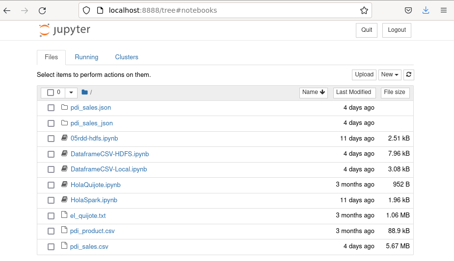

<!doctype html>
<html lang="es" class="no-js">
  <head>
    
      <meta charset="utf-8">
      <meta name="viewport" content="width=device-width,initial-scale=1">
      
      
      
        <link rel="canonical" href="https://aitor-medrano.github.io/bigdata2122/apuntes/spark01rdd.html">
      
      <link rel="icon" href="../imagenes/favicon.png">
      <meta name="generator" content="mkdocs-1.2.3, mkdocs-material-8.1.10">
    
    
      
        <title>Spark - Inteligencia Artificial y Big Data</title>
      
    
    
      <link rel="stylesheet" href="../assets/stylesheets/main.d6be258b.min.css">
      
        
        <link rel="stylesheet" href="../assets/stylesheets/palette.e6a45f82.min.css">
        
          
          
          <meta name="theme-color" content="#02a6f2">
        
      
    
    
    
      
        
        <link rel="preconnect" href="https://fonts.gstatic.com" crossorigin>
        <link rel="stylesheet" href="https://fonts.googleapis.com/css?family=Roboto:300,400,400i,700%7CRoboto+Mono&display=fallback">
        <style>:root{--md-text-font:"Roboto";--md-code-font:"Roboto Mono"}</style>
      
    
    
    <script>__md_scope=new URL("..",location),__md_get=(e,_=localStorage,t=__md_scope)=>JSON.parse(_.getItem(t.pathname+"."+e)),__md_set=(e,_,t=localStorage,a=__md_scope)=>{try{t.setItem(a.pathname+"."+e,JSON.stringify(_))}catch(e){}}</script>
    
      
  


  
  


  <script>function gtag(){dataLayer.push(arguments)}window.dataLayer=window.dataLayer||[],gtag("js",new Date),gtag("config","G-MV889H0W63"),document.addEventListener("DOMContentLoaded",function(){document.forms.search&&document.forms.search.query.addEventListener("blur",function(){this.value&&gtag("event","search",{search_term:this.value})}),"undefined"!=typeof location$&&location$.subscribe(function(e){gtag("config","G-MV889H0W63",{page_path:e.pathname})})})</script>
  <script async src="https://www.googletagmanager.com/gtag/js?id=G-MV889H0W63"></script>


    
    
  </head>
  
  
    
    
    
    
    
    <body dir="ltr" data-md-color-scheme="" data-md-color-primary="light-blue" data-md-color-accent="teal">
  
    
    
    <input class="md-toggle" data-md-toggle="drawer" type="checkbox" id="__drawer" autocomplete="off">
    <input class="md-toggle" data-md-toggle="search" type="checkbox" id="__search" autocomplete="off">
    <label class="md-overlay" for="__drawer"></label>
    <div data-md-component="skip">
      
        
        <a href="#spark" class="md-skip">
          Saltar a contenido
        </a>
      
    </div>
    <div data-md-component="announce">
      
    </div>
    
    
      

<header class="md-header" data-md-component="header">
  <nav class="md-header__inner md-grid" aria-label="Cabecera">
    <a href="../index.html" title="Inteligencia Artificial y Big Data" class="md-header__button md-logo" aria-label="Inteligencia Artificial y Big Data" data-md-component="logo">
      
  

    </a>
    <label class="md-header__button md-icon" for="__drawer">
      <svg xmlns="http://www.w3.org/2000/svg" viewBox="0 0 24 24"><path d="M3 6h18v2H3V6m0 5h18v2H3v-2m0 5h18v2H3v-2z"/></svg>
    </label>
    <div class="md-header__title" data-md-component="header-title">
      <div class="md-header__ellipsis">
        <div class="md-header__topic">
          <span class="md-ellipsis">
            Inteligencia Artificial y Big Data
          </span>
        </div>
        <div class="md-header__topic" data-md-component="header-topic">
          <span class="md-ellipsis">
            
              Spark
            
          </span>
        </div>
      </div>
    </div>
    
    
    
      <label class="md-header__button md-icon" for="__search">
        <svg xmlns="http://www.w3.org/2000/svg" viewBox="0 0 24 24"><path d="M9.5 3A6.5 6.5 0 0 1 16 9.5c0 1.61-.59 3.09-1.56 4.23l.27.27h.79l5 5-1.5 1.5-5-5v-.79l-.27-.27A6.516 6.516 0 0 1 9.5 16 6.5 6.5 0 0 1 3 9.5 6.5 6.5 0 0 1 9.5 3m0 2C7 5 5 7 5 9.5S7 14 9.5 14 14 12 14 9.5 12 5 9.5 5z"/></svg>
      </label>
      <div class="md-search" data-md-component="search" role="dialog">
  <label class="md-search__overlay" for="__search"></label>
  <div class="md-search__inner" role="search">
    <form class="md-search__form" name="search">
      <input type="text" class="md-search__input" name="query" aria-label="Búsqueda" placeholder="Búsqueda" autocapitalize="off" autocorrect="off" autocomplete="off" spellcheck="false" data-md-component="search-query" required>
      <label class="md-search__icon md-icon" for="__search">
        <svg xmlns="http://www.w3.org/2000/svg" viewBox="0 0 24 24"><path d="M9.5 3A6.5 6.5 0 0 1 16 9.5c0 1.61-.59 3.09-1.56 4.23l.27.27h.79l5 5-1.5 1.5-5-5v-.79l-.27-.27A6.516 6.516 0 0 1 9.5 16 6.5 6.5 0 0 1 3 9.5 6.5 6.5 0 0 1 9.5 3m0 2C7 5 5 7 5 9.5S7 14 9.5 14 14 12 14 9.5 12 5 9.5 5z"/></svg>
        <svg xmlns="http://www.w3.org/2000/svg" viewBox="0 0 24 24"><path d="M20 11v2H8l5.5 5.5-1.42 1.42L4.16 12l7.92-7.92L13.5 5.5 8 11h12z"/></svg>
      </label>
      <nav class="md-search__options" aria-label="Search">
        
        <button type="reset" class="md-search__icon md-icon" aria-label="Limpiar" tabindex="-1">
          <svg xmlns="http://www.w3.org/2000/svg" viewBox="0 0 24 24"><path d="M19 6.41 17.59 5 12 10.59 6.41 5 5 6.41 10.59 12 5 17.59 6.41 19 12 13.41 17.59 19 19 17.59 13.41 12 19 6.41z"/></svg>
        </button>
      </nav>
      
    </form>
    <div class="md-search__output">
      <div class="md-search__scrollwrap" data-md-scrollfix>
        <div class="md-search-result" data-md-component="search-result">
          <div class="md-search-result__meta">
            Inicializando búsqueda
          </div>
          <ol class="md-search-result__list"></ol>
        </div>
      </div>
    </div>
  </div>
</div>
    
    
  </nav>
  
</header>
    
    <div class="md-container" data-md-component="container">
      
      
        
          
        
      
      <main class="md-main" data-md-component="main">
        <div class="md-main__inner md-grid">
          
            
              
              <div class="md-sidebar md-sidebar--primary" data-md-component="sidebar" data-md-type="navigation" >
                <div class="md-sidebar__scrollwrap">
                  <div class="md-sidebar__inner">
                    


<nav class="md-nav md-nav--primary" aria-label="Navegación" data-md-level="0">
  <label class="md-nav__title" for="__drawer">
    <a href="../index.html" title="Inteligencia Artificial y Big Data" class="md-nav__button md-logo" aria-label="Inteligencia Artificial y Big Data" data-md-component="logo">
      
  

    </a>
    Inteligencia Artificial y Big Data
  </label>
  
  <ul class="md-nav__list" data-md-scrollfix>
    
      
      
      

  
  
  
    <li class="md-nav__item">
      <a href="../index.html" class="md-nav__link">
        Inicio
      </a>
    </li>
  

    
      
      
      

  
  
  
    
    <li class="md-nav__item md-nav__item--nested">
      
      
        <input class="md-nav__toggle md-toggle" data-md-toggle="__nav_2" data-md-state="indeterminate" type="checkbox" id="__nav_2" checked>
      
      
      
      
        <label class="md-nav__link" for="__nav_2">
          Arquitecturas Big Data
          <span class="md-nav__icon md-icon"></span>
        </label>
      
      <nav class="md-nav" aria-label="Arquitecturas Big Data" data-md-level="1">
        <label class="md-nav__title" for="__nav_2">
          <span class="md-nav__icon md-icon"></span>
          Arquitecturas Big Data
        </label>
        <ul class="md-nav__list" data-md-scrollfix>
          
            
              
  
  
  
    <li class="md-nav__item">
      <a href="nube01.html" class="md-nav__link">
        1.- Cloud Computing
      </a>
    </li>
  

            
          
            
              
  
  
  
    <li class="md-nav__item">
      <a href="nube02aws.html" class="md-nav__link">
        2.- AWS
      </a>
    </li>
  

            
          
            
              
  
  
  
    <li class="md-nav__item">
      <a href="nube03computacion.html" class="md-nav__link">
        3.- Computación
      </a>
    </li>
  

            
          
            
              
  
  
  
    <li class="md-nav__item">
      <a href="nube04almacenamiento.html" class="md-nav__link">
        4.- Almacenamiento
      </a>
    </li>
  

            
          
            
              
  
  
  
    <li class="md-nav__item">
      <a href="nube05datos.html" class="md-nav__link">
        5.- Datos
      </a>
    </li>
  

            
          
            
              
  
  
  
    <li class="md-nav__item">
      <a href="arquitecturas01.html" class="md-nav__link">
        6.- Arquitecturas
      </a>
    </li>
  

            
          
        </ul>
      </nav>
    </li>
  

    
      
      
      

  
  
  
    
    <li class="md-nav__item md-nav__item--nested">
      
      
        <input class="md-nav__toggle md-toggle" data-md-toggle="__nav_3" data-md-state="indeterminate" type="checkbox" id="__nav_3" checked>
      
      
      
      
        <label class="md-nav__link" for="__nav_3">
          Ingesta de Datos
          <span class="md-nav__icon md-icon"></span>
        </label>
      
      <nav class="md-nav" aria-label="Ingesta de Datos" data-md-level="1">
        <label class="md-nav__title" for="__nav_3">
          <span class="md-nav__icon md-icon"></span>
          Ingesta de Datos
        </label>
        <ul class="md-nav__list" data-md-scrollfix>
          
            
              
  
  
  
    <li class="md-nav__item">
      <a href="ingesta01.html" class="md-nav__link">
        1.- ETL
      </a>
    </li>
  

            
          
            
              
  
  
  
    <li class="md-nav__item">
      <a href="ingesta02pentaho.html" class="md-nav__link">
        2.- Pentaho DI
      </a>
    </li>
  

            
          
            
              
  
  
  
    <li class="md-nav__item">
      <a href="ingesta03nifi1.html" class="md-nav__link">
        3.- Nifi I
      </a>
    </li>
  

            
          
            
              
  
  
  
    <li class="md-nav__item">
      <a href="ingesta04nifi2.html" class="md-nav__link">
        4.- Nifi II
      </a>
    </li>
  

            
          
            
              
  
  
  
    <li class="md-nav__item">
      <a href="ingesta05python.html" class="md-nav__link">
        5.- Python y AWS
      </a>
    </li>
  

            
          
        </ul>
      </nav>
    </li>
  

    
      
      
      

  
  
  
    
    <li class="md-nav__item md-nav__item--nested">
      
      
        <input class="md-nav__toggle md-toggle" data-md-toggle="__nav_4" data-md-state="indeterminate" type="checkbox" id="__nav_4" checked>
      
      
      
      
        <label class="md-nav__link" for="__nav_4">
          Big Data Aplicado
          <span class="md-nav__icon md-icon"></span>
        </label>
      
      <nav class="md-nav" aria-label="Big Data Aplicado" data-md-level="1">
        <label class="md-nav__title" for="__nav_4">
          <span class="md-nav__icon md-icon"></span>
          Big Data Aplicado
        </label>
        <ul class="md-nav__list" data-md-scrollfix>
          
            
              
  
  
  
    <li class="md-nav__item">
      <a href="bdaplicado01hadoop.html" class="md-nav__link">
        1.- Hadoop
      </a>
    </li>
  

            
          
            
              
  
  
  
    <li class="md-nav__item">
      <a href="bdaplicado02hdfs.html" class="md-nav__link">
        2.- HDFS
      </a>
    </li>
  

            
          
            
              
  
  
  
    <li class="md-nav__item">
      <a href="bdaplicado03flume.html" class="md-nav__link">
        3.- Sqoop / Flume
      </a>
    </li>
  

            
          
            
              
  
  
  
    <li class="md-nav__item">
      <a href="bdaplicado04hive.html" class="md-nav__link">
        4.- Hive
      </a>
    </li>
  

            
          
            
              
  
  
  
    <li class="md-nav__item">
      <a href="bdaplicado05kafka.html" class="md-nav__link">
        5.- Kafka
      </a>
    </li>
  

            
          
        </ul>
      </nav>
    </li>
  

    
  </ul>
</nav>
                  </div>
                </div>
              </div>
            
            
              
              <div class="md-sidebar md-sidebar--secondary" data-md-component="sidebar" data-md-type="toc" >
                <div class="md-sidebar__scrollwrap">
                  <div class="md-sidebar__inner">
                    

<nav class="md-nav md-nav--secondary" aria-label="Tabla de contenidos">
  
  
  
    
  
  
    <label class="md-nav__title" for="__toc">
      <span class="md-nav__icon md-icon"></span>
      Tabla de contenidos
    </label>
    <ul class="md-nav__list" data-md-component="toc" data-md-scrollfix>
      
        <li class="md-nav__item">
  <a href="#introduccion" class="md-nav__link">
    Introducción
  </a>
  
    <nav class="md-nav" aria-label="Introducción">
      <ul class="md-nav__list">
        
          <li class="md-nav__item">
  <a href="#spark-vs-hadoop" class="md-nav__link">
    Spark vs Hadoop
  </a>
  
</li>
        
          <li class="md-nav__item">
  <a href="#stack-unificado" class="md-nav__link">
    Stack unificado
  </a>
  
</li>
        
      </ul>
    </nav>
  
</li>
      
        <li class="md-nav__item">
  <a href="#puesta-en-marcha" class="md-nav__link">
    Puesta en Marcha
  </a>
  
    <nav class="md-nav" aria-label="Puesta en Marcha">
      <ul class="md-nav__list">
        
          <li class="md-nav__item">
  <a href="#sparkcontext-vs-sparksession" class="md-nav__link">
    SparkContext vs SparkSession
  </a>
  
</li>
        
          <li class="md-nav__item">
  <a href="#hola-spark" class="md-nav__link">
    Hola Spark
  </a>
  
</li>
        
      </ul>
    </nav>
  
</li>
      
        <li class="md-nav__item">
  <a href="#arquitectura" class="md-nav__link">
    Arquitectura
  </a>
  
    <nav class="md-nav" aria-label="Arquitectura">
      <ul class="md-nav__list">
        
          <li class="md-nav__item">
  <a href="#aplicaciones-spark" class="md-nav__link">
    Aplicaciones Spark
  </a>
  
</li>
        
          <li class="md-nav__item">
  <a href="#job-stage-y-task" class="md-nav__link">
    Job, Stage y Task
  </a>
  
</li>
        
          <li class="md-nav__item">
  <a href="#dataframe" class="md-nav__link">
    DataFrame
  </a>
  
</li>
        
          <li class="md-nav__item">
  <a href="#rdd" class="md-nav__link">
    RDD
  </a>
  
</li>
        
      </ul>
    </nav>
  
</li>
      
        <li class="md-nav__item">
  <a href="#acciones" class="md-nav__link">
    Acciones
  </a>
  
    <nav class="md-nav" aria-label="Acciones">
      <ul class="md-nav__list">
        
          <li class="md-nav__item">
  <a href="#parallelize" class="md-nav__link">
    Parallelize
  </a>
  
</li>
        
          <li class="md-nav__item">
  <a href="#take-y-sample" class="md-nav__link">
    Take y Sample
  </a>
  
</li>
        
          <li class="md-nav__item">
  <a href="#collect" class="md-nav__link">
    Collect
  </a>
  
</li>
        
      </ul>
    </nav>
  
</li>
      
        <li class="md-nav__item">
  <a href="#transformaciones" class="md-nav__link">
    Transformaciones
  </a>
  
    <nav class="md-nav" aria-label="Transformaciones">
      <ul class="md-nav__list">
        
          <li class="md-nav__item">
  <a href="#tipos-de-transformaciones" class="md-nav__link">
    Tipos de transformaciones
  </a>
  
</li>
        
      </ul>
    </nav>
  
</li>
      
        <li class="md-nav__item">
  <a href="#transformaciones-narrow" class="md-nav__link">
    Transformaciones Narrow
  </a>
  
    <nav class="md-nav" aria-label="Transformaciones Narrow">
      <ul class="md-nav__list">
        
          <li class="md-nav__item">
  <a href="#map" class="md-nav__link">
    Map
  </a>
  
</li>
        
          <li class="md-nav__item">
  <a href="#flatmap" class="md-nav__link">
    FlatMap
  </a>
  
</li>
        
          <li class="md-nav__item">
  <a href="#filter" class="md-nav__link">
    Filter
  </a>
  
</li>
        
          <li class="md-nav__item">
  <a href="#union" class="md-nav__link">
    Union
  </a>
  
</li>
        
          <li class="md-nav__item">
  <a href="#intersection" class="md-nav__link">
    Intersection
  </a>
  
</li>
        
          <li class="md-nav__item">
  <a href="#subtract" class="md-nav__link">
    Subtract
  </a>
  
</li>
        
          <li class="md-nav__item">
  <a href="#distinct" class="md-nav__link">
    Distinct
  </a>
  
</li>
        
      </ul>
    </nav>
  
</li>
      
        <li class="md-nav__item">
  <a href="#rdd-de-pares" class="md-nav__link">
    RDD de Pares
  </a>
  
</li>
      
        <li class="md-nav__item">
  <a href="#transformaciones-wide" class="md-nav__link">
    Transformaciones Wide
  </a>
  
    <nav class="md-nav" aria-label="Transformaciones Wide">
      <ul class="md-nav__list">
        
          <li class="md-nav__item">
  <a href="#reducebykey" class="md-nav__link">
    ReduceByKey
  </a>
  
</li>
        
          <li class="md-nav__item">
  <a href="#groupbykey" class="md-nav__link">
    GroupByKey
  </a>
  
</li>
        
          <li class="md-nav__item">
  <a href="#sortbykey" class="md-nav__link">
    SortByKey
  </a>
  
</li>
        
          <li class="md-nav__item">
  <a href="#sortby" class="md-nav__link">
    SortBy
  </a>
  
</li>
        
      </ul>
    </nav>
  
</li>
      
        <li class="md-nav__item">
  <a href="#particiones" class="md-nav__link">
    Particiones
  </a>
  
    <nav class="md-nav" aria-label="Particiones">
      <ul class="md-nav__list">
        
          <li class="md-nav__item">
  <a href="#mappartitions" class="md-nav__link">
    MapPartitions
  </a>
  
</li>
        
          <li class="md-nav__item">
  <a href="#mappartitionswithindex" class="md-nav__link">
    mapPartitionsWithIndex
  </a>
  
</li>
        
          <li class="md-nav__item">
  <a href="#modificando-las-particiones" class="md-nav__link">
    Modificando las particiones
  </a>
  
</li>
        
      </ul>
    </nav>
  
</li>
      
        <li class="md-nav__item">
  <a href="#spark-ui" class="md-nav__link">
    Spark UI
  </a>
  
</li>
      
        <li class="md-nav__item">
  <a href="#actividades" class="md-nav__link">
    Actividades
  </a>
  
</li>
      
        <li class="md-nav__item">
  <a href="#referencias" class="md-nav__link">
    Referencias
  </a>
  
</li>
      
    </ul>
  
</nav>
                  </div>
                </div>
              </div>
            
          
          <div class="md-content" data-md-component="content">
            <article class="md-content__inner md-typeset">
              
                

<h1 id="spark">Spark<a class="headerlink" href="#spark" title="Permanent link">&para;</a></h1>
<p>La analítica de datos es el proceso de inspeccionar, limpiar, transformar y modelar los datos con el objetivo de descubrir información útil, obtener conclusiones sobre los datos y ayudar en la toma de decisiones.</p>
<p>Para ello, el uso de <em>Spark</em> de la mano de <em>Python</em>, <em>NumPy</em> y <em>Pandas</em> como interfaz de la analítica es clave en el día a día de un científico/ingeniero de datos.</p>
<p>La version 3.0 de <a href="https://spark.apache.org"><em>Apache Spark</em></a> se lanzó en 2020, diez años después de su nacimiento. Esta versión incluye mejoras de rendimiento (el doble en consultas adaptativas), facilidad en el uso del API de Pandas, un nuevo interfaz gráfico para el streaming que facilita el seguimiento y depuración de las consultas y ajustes de rendimiento.</p>
<h2 id="introduccion">Introducción<a class="headerlink" href="#introduccion" title="Permanent link">&para;</a></h2>
<figure style="float: right;">
    
    <figcaption>Logo de Apache Spark</figcaption>
</figure>

<p><em>Spark</em> es un framework de computación distribuido en paralelo similar a <em>Hadoop-MapReduce</em> (así pues, <em>Spark</em> no es un lenguaje de programación), pero que en vez de almacenar los datos en un sistema de ficheros distribuidos o utilizar un sistema de gestión de recursos, lo hace en memoria. El hecho de almacenar en memoria los cálculos intermedios implica que sea mucho más eficiente que <em>Hadoop MapReduce</em>.</p>
<p>En el caso de tener la necesidad de almacenar los datos o gestionar los recursos, se apoya en sistemas ya existentes como <em>HDFS</em>, <em>YARN</em> o <em>Apache Mesos</em>. Por lo tanto, <em>Hadoop</em> y <em>Spark</em> son sistemas complementarios.</p>
<p>El diseño de <em>Spark</em> se basa principalmente en cuatro características:</p>
<ul>
<li><ins>Velocidad</ins>: enfocado al uso en un clúster de <em>commodity hardware</em> con una gestión eficiente de multihilo y procesamiento paralelo. <em>Spark</em> construye sus consultas de computación mediante un grafo dirigido acíclico (DAG) y utiliza un planificador para descomponer el grafo en tareas que se ejecutan en paralelo mediante los nodos de los clústers. Finalmente, utiliza un motor de ejecución (<em>Tungsten</em>) que genera código compacto para optimizar la ejecución. Todo ello teniendo en cuenta que los resultados intermedios se almacenan en memoria.</li>
<li><ins>Facilidad de uso</ins>: Spark ofrece varias capas de abstracción sobre los datos, como son los <em>RDD</em>, <em>DataFrames</em> y <em>Dataset</em>. Al ofrecer un conjunto de transformaciones y acciones como operaciones de su API, Spark facilita el desarrollo de aplicaciones Big data.</li>
<li><ins>Modularidad</ins>: soporte para todo tipo de cargas mediante cualquiera de los lenguajes de programación soportados: <em>Scala</em>, <em>Java</em>, <em>Python</em>, <em>SQL</em> y <em>R</em>, así como los módulos de <em>Spark SQL</em> para consultas interactivas, <em>Spark Structured Streaming</em> para procesamiento de datos en <em>streaming</em>, <em>Spark MLlib</em> para <em>machine learning</em> y GraphX. De esta manera, mediante una única aplicación Spark se puede hacer todo sin necesidad de utilizar APIs separadas.</li>
<li><ins>Extensibilidad</ins>: Al centrarse unicamente en el procesamiento, la gestión de los datos se puede realizar a partir de <em>Hadoop</em>, <em>Cassandra</em>, <em>HBase</em>, <em>MongoDB</em>, <em>Hive</em> o cualquier SGBD relacional, haciendo todo en memoria. Además, se puede extender el API para utilizar otras fuentes de datos, como <em>Apache Kafka</em>, <em>Amazon S3</em> o <em>Azure Storage</em>.</li>
</ul>
<p>En términos de flexibilidad, Spark ofrece un <em>stack</em> unificado que permite resolver múltiples tipos de procesamiento de datos, tanto aplicaciones <em>batch</em> como consultas interactivas, algoritmos de <em>machine learning</em> que quieren muchas iteraciones, aplicaciones de ingesta en streaming con rendimiento cercado al tiempo real, etc... Antes de <em>Spark</em>, para cada uno de estos tipos de procesamiento necesitábamos una herramienta diferente, ahora con Spark tenemos una <em>bala de plata</em> que reduce los costes y recursos necesarios.</p>
<h3 id="spark-vs-hadoop">Spark vs Hadoop<a class="headerlink" href="#spark-vs-hadoop" title="Permanent link">&para;</a></h3>
<p>La principal diferencia es que la computación se realiza en memoria, lo que puede implicar un mejora de hasta 100 veces mejor rendimiento. Para ello, se realiza una evaluación perezosa de las operaciones, de manera, que hasta que no se realiza una operación, los datos realmente no se cargan.</p>
<p>Para solucionar los problemas asociados a <em>MapReduce</em>, Spark crea un espacio de memoria RAM compartida entre los ordenadores del clúster. Este permite que los NodeManager/WorkerNode compartan variables (y su estado), eliminando la necesidad de escribir los resultados intermedios en disco. Esta zona de memoria compartida se traduce en el uso de RDD, <em>DataFrames</em> y <em>DataSets</em>, permitiendo realizar procesamiento en memoria a lo largo de un clúster con tolerancia a fallos.</p>
<h3 id="stack-unificado">Stack unificado<a class="headerlink" href="#stack-unificado" title="Permanent link">&para;</a></h3>
<p>El elemento principal es <strong><em>Spark Core</em></strong> aporta toda la funcionalidad necesaria para preparar y ejecutar las aplicaciones distribuidas, gestionando la planificación y tolerancia a fallos de las diferentes tareas. Para ello, el núcleo ofrece un entorno NoSQL idóneo para el análisis exploratorio e interactivo de los datos. Spark se puede ejecutar en <em>batch</em> o en modo interactivo y tiene soporte para Python. Independientemente del lenguaje utilizado (ya sea Python, Java, Scala, R o SQL) el código se despliega entre todos los nodos a lo largo del clúster.</p>
<p>Además, contiene otros 4 grandes componentes construidos sobre el <em>core</em>:</p>
<figure style="align: center;">
    
    <figcaption>Componentes de Spark</figcaption>
</figure>

<ol>
<li><strong><em>Spark Streaming</em></strong> es una herramienta para la creación de aplicaciones que procesamiento en <em>streaming</em> que ofrece un gran rendimiento con soporte para la tolerancia a fallos. Los datos pueden venir desde fuentes de datos tan diversas como <em>Kafka</em>, <em>Flume</em>, <em>Twitter</em> y tratarse en tiempo real.</li>
<li>
<p><strong><em>Spark SQL</em></strong> ofrece un interfaz SQL para trabajar con <em>Spark</em>, permitiendo la lectura de datos tanto de una tabla de cualquier base de datos relacional como de ficheros con formatos estructurados (<em>CSV</em>, texto, <em>JSON</em>, <em>Avro</em>, <em>ORC</em>, <em>Parquet</em>, etc...) y construir tablas permanentes o temporales en <em>Spark</em>. Tras la lectura, permite combinar sentencias SQL para trabajar con los datos y cargar los resultados en un <em>DataFrame de Spark</em>.</p>
<p>Por ejemplo, con este fragmento leemos un fichero JSON desde S3, creamos una tabla temporal y mediante una consulta SQL cargamos los datos en un DataFrame de Spark:</p>
<div class="highlight"><pre><span></span><code><span class="linenos" data-linenos="1 "></span><span class="c1">// In Scala</span>
<span class="linenos" data-linenos="2 "></span><span class="c1">// Read data off Amazon S3 bucket into a Spark DataFrame</span>
<span class="linenos" data-linenos="3 "></span><span class="n">spark</span><span class="p">.</span><span class="n">read</span><span class="p">.</span><span class="n">json</span><span class="p">(</span><span class="s">&quot;s3://apache_spark/data/committers.json&quot;</span><span class="p">)</span>
<span class="linenos" data-linenos="4 "></span><span class="p">.</span><span class="n">createOrReplaceTempView</span><span class="p">(</span><span class="s">&quot;committers&quot;</span><span class="p">)</span>
<span class="linenos" data-linenos="5 "></span><span class="c1">// Issue a SQL query and return the result as a Spark DataFrame</span>
<span class="linenos" data-linenos="6 "></span><span class="kd">val</span> <span class="n">results</span> <span class="o">=</span> <span class="n">spark</span><span class="p">.</span><span class="n">sql</span><span class="p">(</span><span class="s">&quot;&quot;&quot;SELECT name, org, module, release, num_commits</span>
<span class="linenos" data-linenos="7 "></span><span class="s">    FROM committers WHERE module = &#39;mllib&#39; AND num_commits &gt; 10</span>
<span class="linenos" data-linenos="8 "></span><span class="s">    ORDER BY num_commits DESC&quot;&quot;&quot;</span><span class="p">)</span>
</code></pre></div>
</li>
<li>
<p><strong><em>Spark MLlib</em></strong> es un módulo de <em>machine learning</em> que ofrece la gran mayoría de algoritmos de ML y permite construir <em>pipelines</em> para el entrenamiento y evaluación de los modelos IA.</p>
</li>
<li><strong><em>GraphX</em></strong> permite procesar estructuras de datos en grafo, siendo muy útiles para recorrer las relaciones es una red social u ofrecer recomendaciones sobre gustos/afinidades. En este curso no vamos a entrar en detalle en este módulo.</li>
</ol>
<p>Además, la comunidad de <em>Spark</em> dispone de un gran número de conectores para diferentes fuentes de datos, herramientas de monitorización, etc... que conforman su propio ecosistema:</p>
<figure style="align: center;">
    
    <figcaption>Ecosistema de Spark</figcaption>
</figure>

<h2 id="puesta-en-marcha">Puesta en Marcha<a class="headerlink" href="#puesta-en-marcha" title="Permanent link">&para;</a></h2>
<p>En nuestra máquina virtual, únicamente necesitamos ejecutar el comando <code>pyspark</code> el cual arrancará directamente un cuaderno <em>Jupyter</em>:</p>
<div class="highlight"><pre><span></span><code><span class="linenos" data-linenos=" 1 "></span>iabd@iabd-virtualbox:~/Spark$ pyspark
<span class="linenos" data-linenos=" 2 "></span><span class="o">[</span>I <span class="m">16</span>:50:57.168 NotebookApp<span class="o">]</span> Serving notebooks from <span class="nb">local</span> directory: /home/iabd/Spark
<span class="linenos" data-linenos=" 3 "></span><span class="o">[</span>I <span class="m">16</span>:50:57.168 NotebookApp<span class="o">]</span> The Jupyter Notebook is running at:
<span class="linenos" data-linenos=" 4 "></span><span class="o">[</span>I <span class="m">16</span>:50:57.168 NotebookApp<span class="o">]</span> http://localhost:8888/?token<span class="o">=</span>b7b4c7232e5d9d3f7c7fdd51d75e5fe314c3f2c637e90652
<span class="linenos" data-linenos=" 5 "></span><span class="o">[</span>I <span class="m">16</span>:50:57.168 NotebookApp<span class="o">]</span>  or http://127.0.0.1:8888/?token<span class="o">=</span>b7b4c7232e5d9d3f7c7fdd51d75e5fe314c3f2c637e90652
<span class="linenos" data-linenos=" 6 "></span><span class="o">[</span>I <span class="m">16</span>:50:57.168 NotebookApp<span class="o">]</span> Use Control-C to stop this server and shut down all kernels <span class="o">(</span>twice to skip confirmation<span class="o">)</span>.
<span class="linenos" data-linenos=" 7 "></span><span class="o">[</span>C <span class="m">16</span>:50:57.968 NotebookApp<span class="o">]</span> 
<span class="linenos" data-linenos=" 8 "></span>
<span class="linenos" data-linenos=" 9 "></span>    To access the notebook, open this file <span class="k">in</span> a browser:
<span class="linenos" data-linenos="10 "></span>        file:///home/iabd/.local/share/jupyter/runtime/nbserver-9654-open.html
<span class="linenos" data-linenos="11 "></span>    Or copy and paste one of these URLs:
<span class="linenos" data-linenos="12 "></span>        http://localhost:8888/?token<span class="o">=</span>b7b4c7232e5d9d3f7c7fdd51d75e5fe314c3f2c637e90652
<span class="linenos" data-linenos="13 "></span>     or http://127.0.0.1:8888/?token<span class="o">=</span>b7b4c7232e5d9d3f7c7fdd51d75e5fe314c3f2c637e90652
<span class="linenos" data-linenos="14 "></span><span class="o">[</span>W <span class="m">16</span>:51:02.666 NotebookApp<span class="o">]</span> <span class="m">404</span> GET /api/kernels/a8119b9f-91ce-4eee-b32b-9be48a0d281e/channels?session_id<span class="o">=</span>5860cf5e65fa481d9110c9ff9904d3f7 <span class="o">(</span><span class="m">127</span>.0.0.1<span class="o">)</span>: Kernel does not exist: a8119b9f-91ce-4eee-b32b-9be48a0d281e
<span class="linenos" data-linenos="15 "></span><span class="o">[</span>W <span class="m">16</span>:51:02.676 NotebookApp<span class="o">]</span> <span class="m">404</span> GET /api/kernels/a8119b9f-91ce-4eee-b32b-9be48a0d281e/channels?session_id<span class="o">=</span>5860cf5e65fa481d9110c9ff9904d3f7 <span class="o">(</span><span class="m">127</span>.0.0.1<span class="o">)</span> <span class="m">12</span>.30ms <span class="nv">referer</span><span class="o">=</span>None
</code></pre></div>
<div class="admonition tip">
<p class="admonition-title">Jupyter Notebook</p>
<p>Si instalamos PySpark según las <a href="https://spark.apache.org/docs/latest/api/python/getting_started/install.html">instrucciones de la propia web</a>, al ejecutar <code>pyspark</code>, se lanzara un shell. Para que se abra automáticamente <em>Jupyter Lab</em>, necesitamos exportar las siguientes variables de entorno:</p>
<div class="highlight"><span class="filename">~/.bashrc</span><pre><span></span><code><span class="linenos" data-linenos="1 "></span>export PYSPARK_DRIVER_PYTHON=jupyter
<span class="linenos" data-linenos="2 "></span>export PYSPARK_DRIVER_PYTHON_OPTS=&#39;notebook&#39;
</code></pre></div>
<p>Más información en <a href="https://www.sicara.ai/blog/2017-05-02-get-started-pyspark-jupyter-notebook-3-minutes">https://www.sicara.ai/blog/2017-05-02-get-started-pyspark-jupyter-notebook-3-minutes</a></p>
</div>
<p>Así pues, automáticamente se abrirá una ventana en el navegador web donde crear/trabajar con los cuadernos Jupyter:</p>
<figure style="align: center;">
    
    <figcaption>Cuadernos Jupyter con PySpark</figcaption>
</figure>

<p>Otra posibilidad es utilizar alguna de las imágenes <em>Docker</em> disponibles que facilitan su uso. En nuestro caso, recomendamos las imágenes disponibles en <a href="https://github.com/jupyter/docker-stacks">https://github.com/jupyter/docker-stacks</a>.</p>
<p>Para lanzar la imagen de <em>PySpark</em> con cuadernos <em>Jupyter</em> utilizaremos:</p>
<div class="highlight"><pre><span></span><code><span class="linenos" data-linenos="1 "></span>docker run -d -p <span class="m">8888</span>:8888 -p <span class="m">4040</span>:4040 -p <span class="m">4041</span>:4041 jupyter/pyspark-notebook
</code></pre></div>
<p>O si queremos crear un volumen con la carpeta actual:</p>
<div class="highlight"><pre><span></span><code><span class="linenos" data-linenos="1 "></span>docker run -d -v <span class="si">${</span><span class="nv">PWD</span><span class="si">}</span>:/home/jovyan/work -p 
<span class="linenos" data-linenos="2 "></span><span class="m">8888</span>:8888 -p <span class="m">4040</span>:4040 -p <span class="m">4041</span>:4041 --name pyspark jupyter/pyspark-notebook
</code></pre></div>
<h3 id="sparkcontext-vs-sparksession">SparkContext vs SparkSession<a class="headerlink" href="#sparkcontext-vs-sparksession" title="Permanent link">&para;</a></h3>
<p><em>Spark SparkContext</em> es el punto de entrada a <em>Spark</em> desde las versiones 1.x y se utiliza para crear de forma programativa RDD, acumuladores y variables <em>broadcast</em> en el clúster. Desde Spark 2.0, la mayoría de funcionalidades (métodos) disponibles en <em>SparkContext</em> también los están en <em>SparkSession</em>. Su objeto <code>sc</code> está disponible en el <em>spark-shell</em> y se puede crear de forma programativa mediante la clase <code>SparkContext</code>.</p>
<p><em>SparkSession</em> se introdujo en la versión 2.0 y es el punto de entrada para crear <em>RDD</em>, <em>DataFrames</em> y <em>DataSets</em>. El objeto <code>spark</code> se encuentra disponible por defecto en el <em>spark-shell</em> y se puede crear de forma programativa mediante el patrón builder de <code>SparkSession</code>.</p>
<h3 id="hola-spark">Hola Spark<a class="headerlink" href="#hola-spark" title="Permanent link">&para;</a></h3>
<p>Lo primero que debemos hacer siempre es conectarnos al contexto de <em>Spark</em>, el cual le indica a <em>Spark</em> como acceder al clúster. Si utilizamos la imagen de <em>Docker</em>, debemos obtener siempre el contexto a partir de la clase <code>SparkSession</code>:</p>
<div class="highlight"><span class="filename">ejemploDockerSpark.py</span><pre><span></span><code><span class="linenos" data-linenos="1 "></span><span class="kn">from</span> <span class="nn">pyspark.sql</span> <span class="kn">import</span> <span class="n">SparkSession</span>
<span class="linenos" data-linenos="2 "></span>
<span class="linenos" data-linenos="3 "></span><span class="n">spark</span> <span class="o">=</span> <span class="n">SparkSession</span><span class="o">.</span><span class="n">builder</span><span class="o">.</span><span class="n">getOrCreate</span><span class="p">()</span> <span class="c1"># SparkSession de forma programativa</span>
<span class="linenos" data-linenos="4 "></span><span class="n">sc</span> <span class="o">=</span> <span class="n">spark</span><span class="o">.</span><span class="n">sparkContext</span>                    <span class="c1"># SparkContext a partir de la sesión</span>
<span class="linenos" data-linenos="5 "></span>
<span class="linenos" data-linenos="6 "></span><span class="c1"># Suma de los 100 primeros números</span>
<span class="linenos" data-linenos="7 "></span><span class="n">rdd</span> <span class="o">=</span> <span class="n">sc</span><span class="o">.</span><span class="n">parallelize</span><span class="p">(</span><span class="nb">range</span><span class="p">(</span><span class="mi">100</span> <span class="o">+</span> <span class="mi">1</span><span class="p">))</span>
<span class="linenos" data-linenos="8 "></span><span class="n">rdd</span><span class="o">.</span><span class="n">sum</span><span class="p">()</span>
</code></pre></div>
<p>En cambio, si utilizamos la instalación de <em>PySpark</em> que tenemos en la máquina virtual, directamente podemos acceder a la instancia de <code>SparkSession</code> a través del objeto global <code>spark</code>:</p>
<div class="highlight"><span class="filename">ejemploPySpark.py</span><pre><span></span><code><span class="linenos" data-linenos="1 "></span><span class="n">sc</span> <span class="o">=</span> <span class="n">spark</span><span class="o">.</span><span class="n">sparkContext</span>     <span class="c1"># spark es una instancia de la clase SparkSession</span>
<span class="linenos" data-linenos="2 "></span>
<span class="linenos" data-linenos="3 "></span><span class="n">rdd</span> <span class="o">=</span> <span class="n">sc</span><span class="o">.</span><span class="n">parallelize</span><span class="p">(</span><span class="nb">range</span><span class="p">(</span><span class="mi">100</span> <span class="o">+</span> <span class="mi">1</span><span class="p">))</span>
<span class="linenos" data-linenos="4 "></span><span class="n">rdd</span><span class="o">.</span><span class="n">sum</span><span class="p">()</span>
</code></pre></div>
<p>En ambos casos, si mostramos el contenido del contexto obtendremos algo similar a:</p>
<div class="highlight"><pre><span></span><code><span class="linenos" data-linenos="1 "></span>Version
<span class="linenos" data-linenos="2 "></span>    v3.2.0
<span class="linenos" data-linenos="3 "></span>Master
<span class="linenos" data-linenos="4 "></span>    local[*]
<span class="linenos" data-linenos="5 "></span>AppName
<span class="linenos" data-linenos="6 "></span>    PySparkShell
</code></pre></div>
<p>A continuación podemos ver el resultado completo en su ejecución dentro de un cuaderno Jupyter:</p>
<figure style="align: center;">
    
    <figcaption>Hola Spark</figcaption>
</figure>

<div class="admonition tip">
<p class="admonition-title">Nombre de la aplicación</p>
<p>Si queremos darle nombre a la aplicación Spark, lo podemos hacer al obtener la SparkSession:</p>
<div class="highlight"><pre><span></span><code><span class="linenos" data-linenos="1 "></span><span class="n">spark</span> <span class="o">=</span> <span class="n">SparkSession</span><span class="o">.</span><span class="n">builder</span><span class="o">.</span><span class="n">appName</span><span class="p">(</span><span class="s2">&quot;spark-s8a&quot;</span><span class="p">)</span><span class="o">.</span><span class="n">getOrCreate</span><span class="p">()</span>
</code></pre></div>
</div>
<!--
<https://www.datamechanics.co/blog-post/tutorial-running-pyspark-inside-docker-containers>
-->

<h2 id="arquitectura">Arquitectura<a class="headerlink" href="#arquitectura" title="Permanent link">&para;</a></h2>
<p>Ya hemos comentado que <em>Spark</em> es un sistema distribuido diseñado para procesar grandes volúmenes de datos de forma rápida y eficiente. Este sistema normalmente se despliega en un conjunto de máquinas que se conocen como un <em>clúster Spark</em>, pudiendo estar compuesta de unas pocas máquinas o miles de ellas. Según el <a href="https://spark.apache.org/faq.html">FAQ de Spark</a>, el clúster más grande de Spark está compuesto por más de 8000 nodos.</p>
<p>Normalmente se utiliza un sistema de gestión de recursos como YARN para gestionar de forma inteligente y eficiente el clúster. Los dos componentes principales del clúster zon:</p>
<ul>
<li>el gestor de cluster: nodo maestro que sabe donde se localizan los esclavos, cuanta memoria disponen y el número de cores CPU de cada nodo. Su mayor responsabilidad es orquestar el trabajo asignándolo a los diferentes nodos.</li>
<li>los nodos trabajadores (<em>workers</em>): cada nodo ofrece recursos (memoria, CPU, etc...) al gestor del clúster y realiza las tareas que se le asignen.</li>
</ul>
<h3 id="aplicaciones-spark">Aplicaciones Spark<a class="headerlink" href="#aplicaciones-spark" title="Permanent link">&para;</a></h3>
<p>Una aplicación Spark se compone de dos partes:</p>
<ol>
<li>La lógica de procesamiento de los datos, la cual realizamos mediante alguna de las API que ofrece Spark (Java, Scala, Python, etc...), desde algo sencillo que realice una ETL sobre los datos a problemas más complejos que requieran múltiples iteraciones y tarden varias horas como entrenar un modelo de <em>machine learning</em>.</li>
<li>Driver: coordinador central encargado de interactuar con el clúster Spark y averiguar qué máquinas deben ejecutar la lógica de procesamiento. Para cada una de esas máquinas, el driver realiza una petición al clúster para lanchar un proceso conocido como un ejecutor (<em>executor</em>). Además, el driver <em>Spark</em> es responsable de gestionar y distribuir las tareas a cada ejecutor, y si es necesario, recoger y fusionar los datos resultantes para presentarlos al usuario. Estas tareas se realizan a través de la <em>SparkSession</em>.</li>
</ol>
<p>Cada ejecutor es un proceso JVM (<em>Java Virtual Machine</em>) dedicado para una aplicación Spark específica. Un ejecutor vivirá tanto como dure la aplicación Spark, lo cual puede ser minutos o días, dependiendo de la complejidad de la aplicación. Conviene destacar que los ejecutor son elementos aislados  que no se comparten entre aplicaciones Spark, por lo que la única manera de compartir información entre diferente ejecutores es mediante un sistema de almacenamiento externo como HDFS.</p>
<figure style="align: center;">
    
    <figcaption>Arquitectura entre una aplicación Spark y el gestor del clúster</figcaption>
</figure>

<p>Así pues, <em>Spark</em> utiliza una arquitectura maestro/esclavo, donde el <em>driver</em> es el maestro, y los ejecutores los esclavos. Cada uno de estos componentes se ejecutan como un proceso independiente en el clúster Spark. Por lo tanto, una aplicación Spark se compone de un driver y múltiples ejecutores. Cada ejecutor realiza lo que se le pide en forma de tareas,ejecutando cada una de ellas en un núcleo CPU separado. Así es como el procesamiento paralelo acelera el tratamiento de los datos. Además, cada ejecutor, bajo petición de la lógica de la aplicación, se responsabiliza de <em>cachear</em> un fragmento de los datos en memoria y/o disco.</p>
<p>Al lanzar una aplicación Spark, podemos indicar el número de ejecutores que necesita la aplicación, así com la cantidad de memoria y número de núcleos que cada ejecutor debería tener.</p>
<figure style="align: center;">
    
    <figcaption>Clúster compuesto por un driver y tres ejecutores</figcaption>
</figure>

<h3 id="job-stage-y-task">Job, Stage y Task<a class="headerlink" href="#job-stage-y-task" title="Permanent link">&para;</a></h3>
<p>Cuando creamos una aplicación Spark, por debajo, se distinguen los siguientes elementos:</p>
<ul>
<li><strong><em>Job</em></strong> (trabajo): computación paralela compuesta de múltiples tareas que se crean tras una acción de Spark (<code>save</code>, <code>collect</code>, etc...). Al codificar nuestro código mediante <em>PySpark</em>, el <em>driver</em> convierte la aplicación <em>Spark</em> en uno o más <em>jobs</em>, y a continuación, estos <em>jobs</em> los transforma en un DAG (grafo). Este grafo, en esencia, es el plan de ejecución, donde cada elemento dentro del DAG puede implicar una o varias <em>stages</em> (escenas).</li>
<li><strong><em>Stage</em></strong> (escena): cada <em>job</em> se divide en pequeños conjuntos de tareas que forman un escenario. Como parte del grafo, las <em>stages</em> se crean a partir de si las operaciones se pueden realizar de forma paralela o de forma secuencial. Como no todas las operaciones pueden realizarse en una única <em>stage</em>, en ocasiones de dividen en varias, normalmente debido a los límites computacionales de los diferentes ejecutores.</li>
<li><strong><em>Task</em></strong> (tarea): unida de trabajo más pequeña que se envia a los ejecutores <em>Spark</em>. Cada escenarios se compone de varias tareas. Cada una de las tareas se asigna a un único núcleo y trabaja con una única partición de los datos. Por ello, un ejecutor con 16 núcleos puede tener 16 o más tareas trabajando en 16 o más particiones en paralelo.</li>
</ul>
<figure style="align: center;">
    
    <figcaption>Driver -> Job -> Stage -> Task</figcaption>
</figure>

<h3 id="dataframe">DataFrame<a class="headerlink" href="#dataframe" title="Permanent link">&para;</a></h3>
<p>La principal abstracción de los datos en Spark es el <strong><em>Dataset</em></strong>. Se pueden crear desde las fuentes de entrada de <em>Hadoop</em> (como ficheros HDFS) o mediante transformaciones de otros <em>Datasets</em>.
Dado el cariz de <em>Python</em>, no necesitamos que los <em>Dataset</em> estén fuertemente tipados, por eso, todos los <em>Dataset</em> que usemos serán <code>Dataset[Row]</code> (si trabajásemos mediante <em>Java</em> o <em>Scala</em> sí deberíamos indicar el tipo de sus datos), y por consistencia con el concepto de Pandas y R, los llamaremos <strong><em>DataFrame</em></strong>.</p>
<p>Por ejemplo, veamos cómo podemos crear un <em>DataFrame</em> a partir de un fichero de texto:</p>
<div class="highlight"><pre><span></span><code><span class="linenos" data-linenos=" 1 "></span><span class="kn">from</span> <span class="nn">pyspark.sql</span> <span class="kn">import</span> <span class="n">SparkSession</span>
<span class="linenos" data-linenos=" 2 "></span>
<span class="linenos" data-linenos=" 3 "></span><span class="n">spark</span> <span class="o">=</span> <span class="n">SparkSession</span><span class="o">.</span><span class="n">builder</span><span class="o">.</span><span class="n">getOrCreate</span><span class="p">()</span> 
<span class="linenos" data-linenos=" 4 "></span>
<span class="linenos" data-linenos=" 5 "></span><span class="n">quijoteTxt</span> <span class="o">=</span> <span class="n">spark</span><span class="o">.</span><span class="n">read</span><span class="o">.</span><span class="n">text</span><span class="p">(</span><span class="s2">&quot;el_quijote.txt&quot;</span><span class="p">)</span>
<span class="linenos" data-linenos=" 6 "></span><span class="n">quijoteTxt</span><span class="o">.</span><span class="n">count</span><span class="p">()</span>  <span class="c1"># número de filas del DataFrame - 2186</span>
<span class="linenos" data-linenos=" 7 "></span><span class="n">quijoteTxt</span><span class="o">.</span><span class="n">first</span><span class="p">()</span>  <span class="c1"># primera fila - Row(value=&#39;DON QUIJOTE DE LA MANCHA&#39;)</span>
<span class="linenos" data-linenos=" 8 "></span><span class="c1"># Transformamos un DataFrame en otro nuevo</span>
<span class="linenos" data-linenos=" 9 "></span><span class="n">lineasConQuijote</span> <span class="o">=</span> <span class="n">quijoteTxt</span><span class="o">.</span><span class="n">filter</span><span class="p">(</span><span class="n">quijoteTxt</span><span class="o">.</span><span class="n">value</span><span class="o">.</span><span class="n">contains</span><span class="p">(</span><span class="s2">&quot;Quijote&quot;</span><span class="p">))</span>  <span class="c1"># DataFrame con las líneas que contiene la palabra Quijote</span>
<span class="linenos" data-linenos="10 "></span><span class="n">lineasConQuijote</span><span class="o">.</span><span class="n">count</span><span class="p">()</span>  <span class="c1"># cantidad de líneas con la palabra Quijote - 584</span>
<span class="linenos" data-linenos="11 "></span><span class="c1"># Las transformaciones se pueden encadenar</span>
<span class="linenos" data-linenos="12 "></span><span class="n">quijoteTxt</span><span class="o">.</span><span class="n">filter</span><span class="p">(</span><span class="n">quijoteTxt</span><span class="o">.</span><span class="n">value</span><span class="o">.</span><span class="n">contains</span><span class="p">(</span><span class="s2">&quot;Quijote&quot;</span><span class="p">))</span><span class="o">.</span><span class="n">count</span><span class="p">()</span>     <span class="c1"># idem - 584</span>
</code></pre></div>
<p>Estudiaremos los <em>DataFrame</em> en profundidad en la <a href="spark02dataframe.html">siguiente sesión</a>.</p>
<h3 id="rdd">RDD<a class="headerlink" href="#rdd" title="Permanent link">&para;</a></h3>
<p>Un <a href="https://spark.apache.org/docs/latest/rdd-programming-guide.html#resilient-distributed-datasets-rdds">RDD</a> (<em>Resilient Distributed Datasets</em>) es una estructura de datos que abstrae los datos para su procesamiento en paralelo.</p>
<p>Antes de <em>Spark</em> 2.0, los RDD eran el interfaz principal para interactuar con los datos.</p>
<p>Se trata de una colección de elementos tolerantes a fallos que son immutables (una vez creados, no se pueden modificar) y diseñados para su procesamiento distribuido. Cada conjunto de datos en los RDD se divide en particiones lógicas, que se pueden calcular en diferentes nodos del clúster.</p>
<p>Hay dos formas de crear un RDD:</p>
<ul>
<li>Paralelizando una colección ya existente en nuestra aplicación <em>Spark</em>.</li>
<li>Referenciando un dataset de un sistema externo como <em>HDFS</em>, <em>HBase</em>, etc...</li>
</ul>
<p>Sobre los RDD se pueden realizar dos tipos de operaciones:</p>
<ul>
<li>Acción: devuelven un valor tras ejecutar una computación sobre el conjunto de datos.</li>
<li>Transformación: es una operación perezosa que crea un nuevo conjunto de datos a partir de otro RDD/Dataset, tras realizar un filtrado, <em>join</em>, etc...</li>
</ul>
<div class="admonition warning">
<p class="admonition-title">¿RDD obsoleto?</p>
<p>Antes de la versión 2.0, el principal interfaz para programar en Spark eran los RDD. Tras la versión 2.0, fueron sustituidos por los <em>Dataset</em>, que son RDD fuertemente tipados que además están optimizados a bajo nivel.
El interfaz RDD todavía tiene soporte, sin embargo, se recomienda el uso de los Dataset por su mejor rendimiento.
A lo largo de estas sesiones iremos combinando ambos interfaces para conocer las similitudes y diferencias.</p>
</div>
<h2 id="acciones">Acciones<a class="headerlink" href="#acciones" title="Permanent link">&para;</a></h2>
<p>A continuación vamos a revisar las acciones más comunes. Puedes consultar todas las acciones disponibles en la <a href="https://spark.apache.org/docs/latest/rdd-programming-guide.html#actions">documentación oficial</a>:</p>
<h3 id="parallelize">Parallelize<a class="headerlink" href="#parallelize" title="Permanent link">&para;</a></h3>
<p>Podemos crear RDD directamente desde cero sin necesidad de leer los datos desde un fichero. Para ello, podemos utilizar <a href="https://spark.apache.org/docs/latest/api/python/reference/api/pyspark.SparkContext.parallelize.html">parallelize</a>.</p>
<p>Esta acción divide una colección de elementos entre los nodos de nuestro clústers. Por ejemplo:</p>
<div class="highlight"><pre><span></span><code><span class="linenos" data-linenos="1 "></span><span class="n">miRDD</span> <span class="o">=</span> <span class="n">sc</span><span class="o">.</span><span class="n">parallelize</span><span class="p">([</span><span class="mi">1</span><span class="p">,</span><span class="mi">2</span><span class="p">,</span><span class="mi">3</span><span class="p">,</span><span class="mi">4</span><span class="p">,</span><span class="mi">5</span><span class="p">,</span><span class="mi">6</span><span class="p">,</span><span class="mi">7</span><span class="p">,</span><span class="mi">8</span><span class="p">,</span><span class="mi">9</span><span class="p">])</span>
<span class="linenos" data-linenos="2 "></span>
<span class="linenos" data-linenos="3 "></span><span class="n">lista</span>  <span class="o">=</span> <span class="p">[</span><span class="s1">&#39;Hola&#39;</span><span class="p">,</span> <span class="s1">&#39;Adiós&#39;</span><span class="p">,</span> <span class="s1">&#39;Hasta luego&#39;</span><span class="p">]</span>
<span class="linenos" data-linenos="4 "></span><span class="n">listaRDD</span> <span class="o">=</span> <span class="n">sc</span><span class="o">.</span><span class="n">parallelize</span><span class="p">(</span><span class="n">lista</span><span class="p">)</span> <span class="c1"># Creamos un RDD a partir de una lista</span>
<span class="linenos" data-linenos="5 "></span><span class="n">listaRDD4</span> <span class="o">=</span> <span class="n">sc</span><span class="o">.</span><span class="n">parallelize</span><span class="p">(</span><span class="n">lista</span><span class="p">,</span><span class="mi">4</span><span class="p">)</span> <span class="c1"># Creamos un RDD con 4 particiones</span>
</code></pre></div>
<h3 id="take-y-sample">Take y Sample<a class="headerlink" href="#take-y-sample" title="Permanent link">&para;</a></h3>
<p>Cuando queremos recuperar un número determinado de resultado, de forma similar a <em>limit</em> en SQL, tenemos la acción <a href="https://spark.apache.org/docs/latest/api/python/reference/api/pyspark.RDD.take.html">take</a>:</p>
<div class="highlight"><pre><span></span><code><span class="linenos" data-linenos="1 "></span><span class="n">miRDD</span><span class="o">.</span><span class="n">take</span><span class="p">(</span><span class="mi">3</span><span class="p">)</span>       <span class="c1"># [1, 2, 3]</span>
<span class="linenos" data-linenos="2 "></span><span class="n">listaRDD</span><span class="o">.</span><span class="n">take</span><span class="p">(</span><span class="mi">2</span><span class="p">)</span>    <span class="c1"># [&#39;Hola&#39;, &#39;Adiós&#39;]</span>
</code></pre></div>
<p>Otra opción es utilizar <a href="https://spark.apache.org/docs/latest/api/python/reference/api/pyspark.RDD.sample.html">sample</a> para obtener una muestra de los datos, aunque en este caso no es una acción sino una transformación:</p>
<div class="highlight"><pre><span></span><code><span class="linenos" data-linenos="1 "></span><span class="n">miRDDmuestra</span> <span class="o">=</span> <span class="n">miRDD</span><span class="o">.</span><span class="n">sample</span><span class="p">(</span><span class="kc">False</span><span class="p">,</span> <span class="mf">0.5</span><span class="p">)</span>
<span class="linenos" data-linenos="2 "></span><span class="n">miRDDmuestra</span><span class="o">.</span><span class="n">collect</span><span class="p">()</span>  <span class="c1"># [2, 4, 6, 7, 8, 9] / [1, 2, 3, 4, 6] / [5, 8, 9]</span>
</code></pre></div>
<p>Esta transformación recibe varios parámetros:</p>
<ul>
<li><code>withReplacement</code>: booleano para indicar si queremos elementos repetidos</li>
<li><code>fraction</code>: valor entre 0 y 1 que expresa la probabilidad de elegir cada elemento</li>
<li>opcionalmente se le puede pasar un tercer valor con la semilla</li>
</ul>
<p>Así pues, en el ejemplo anterior, cada llamada a <em>sample</em> ha generado un RDD diferente, sin valores repetidos, pero con un tamaño de RDD variable.</p>
<p>Para obtener una muestra mediante una acción, tenemos la opción <a href="https://spark.apache.org/docs/latest/api/python/reference/api/pyspark.RDD.takeSample.html">takeSample</a> que funciona de forma similar pero sin hacer <em>shuffle</em> y devuelve una lista:</p>
<div class="highlight"><pre><span></span><code><span class="linenos" data-linenos="1 "></span><span class="n">miRDDmuestraT</span> <span class="o">=</span> <span class="n">miRDD</span><span class="o">.</span><span class="n">takeSample</span><span class="p">(</span><span class="kc">False</span><span class="p">,</span> <span class="mi">5</span><span class="p">)</span>
<span class="linenos" data-linenos="2 "></span><span class="nb">print</span><span class="p">(</span><span class="n">miRDDmuestraT</span><span class="p">)</span>  <span class="c1"># [1, 8, 9, 7, 2]</span>
</code></pre></div>
<p>El primer parámetro vuelve a indicar si hay repetidos, pero el segundo fija la cantidad de elementos a devolver.</p>
<p>Por último, mediante <a href="https://spark.apache.org/docs/latest/api/python/reference/api/pyspark.RDD.top.html">top</a> obtenemos los primeros elementos una vez ordenado el RDD:</p>
<div class="highlight"><pre><span></span><code><span class="linenos" data-linenos="1 "></span><span class="n">miRDD</span><span class="o">.</span><span class="n">top</span><span class="p">(</span><span class="mi">3</span><span class="p">)</span>    <span class="c1"># [9, 8, 7]</span>
</code></pre></div>
<p>De forma similar, tenemos <a href="https://spark.apache.org/docs/latest/api/python/reference/api/pyspark.RDD.takeOrdered.html">takeOrdered</a> que recupera la cantidad de registros necesarios pero ordenados ascendentemente (al contrario que <code>top</code>), con la opción de ordenarlos descendentemente (similar a <code>top</code>):</p>
<div class="highlight"><pre><span></span><code><span class="linenos" data-linenos="1 "></span><span class="n">miRDD</span><span class="o">.</span><span class="n">takeOrdered</span><span class="p">(</span><span class="mi">3</span><span class="p">)</span>    <span class="c1"># [1, 2, 3]</span>
<span class="linenos" data-linenos="2 "></span><span class="n">miRDD</span><span class="o">.</span><span class="n">takeOrdered</span><span class="p">(</span><span class="mi">3</span><span class="p">,</span> <span class="k">lambda</span> <span class="n">x</span><span class="p">:</span> <span class="o">-</span><span class="n">x</span><span class="p">)</span>    <span class="c1"># [9, 8, 7]</span>
</code></pre></div>
<p>Hay que tener cuidado si el conjunto de datos es muy grande, porque tanto <code>take</code> como <code>takeSample</code>, <code>takeOrdered</code> y <code>top</code> llevarán todos los datos a memoria.</p>
<h3 id="collect">Collect<a class="headerlink" href="#collect" title="Permanent link">&para;</a></h3>
<p>Un fallo muy posible a la hora de mostrar los datos de un RDD es utilizar <code>rdd.foreach(print)</code> o <code>rdd.map(print)</code>.</p>
<p>En una única máquina, esta operación generaría la salida esperada mostrando todos los elementos del RDD. Sin embargo, al trabajar en un clúster, la salida a <em>stdout</em> la realizarían los diferentes nodos y no el nodo principal.</p>
<p>Así pues, para mostrar todos los elementos de un <em>RDD</em>/<em>DataFrame</em>/<em>Dataset</em> hemos de emplear el método <a href="https://spark.apache.org/docs/3.1.1/api/python/reference/api/pyspark.RDD.collect.html">collect</a>, el cual primero mostrará los RDD del nodo principal (<em>driver node</em>), y luego para cada nodo del cluster mostrará sus datos.</p>
<div class="highlight"><pre><span></span><code><span class="linenos" data-linenos="1 "></span><span class="n">rdd</span><span class="o">.</span><span class="n">collect</span><span class="p">()</span>
</code></pre></div>
<div class="admonition caution">
<p class="admonition-title">Out of memory</p>
<p>Hay que tener mucho cuidado, ya que nos podemos quedar fácilmente sin memoria, ya que <code>collect</code> se trae los datos de todos los ejecutores a un único nodo, el que ésta ejecutando el código (<em>driver</em>).</p>
</div>
<p>Si sólo necesitamos mostrar unos pocos elementos, un enfoque más seguro es utilizar <code>take</code>:</p>
<div class="highlight"><pre><span></span><code><span class="linenos" data-linenos="1 "></span><span class="n">rdd</span><span class="o">.</span><span class="n">take</span><span class="p">(</span><span class="mi">100</span><span class="p">)</span><span class="o">.</span><span class="n">foreach</span><span class="p">(</span><span class="nb">print</span><span class="p">)</span>
</code></pre></div>
<h2 id="transformaciones">Transformaciones<a class="headerlink" href="#transformaciones" title="Permanent link">&para;</a></h2>
<p>En <em>Spark</em>, las estructuras de datos son inmutables, de manera que una vez creadas no se pueden modificar. Para poder modificar un <em>RDD/DataFrame</em>, hace falta realizar una <a href="https://spark.apache.org/docs/latest/rdd-programming-guide.html#transformations">transformación</a>, siendo el modo de expresar la lógica de negocio mediante <em>Spark</em>.</p>
<p>Todas las transformaciones en Spark se evalúan de manera perezosa (<em>lazy evaluation</em>), de manera que los resultados no se computan inmediatamente, sino que se retrasa el cálculo hasta que el valor sea necesario. Para ello, se van almacenando los pasos necesarios y se ejecutan únicamente cuando una acción requiere devolver un resultado al <em>driver</em>. Este diseño facilita un mejor rendimiento de <em>Spark</em> (por ejemplo, imagina que tras una operación <em>map</em> se realiza un <em>reduce</em> y en vez de devolver todo el conjunto de datos tras el map, sólo le enviamos al driver el resultado de la reducción).</p>
<p>Por defecto, cada transformación RDD/DataSet se puede recalcular cada vez que se ejecute una acción. Sin embargo, podemos persistir un RDD en memoria mediante los métodos <code>persist</code> (o <code>cache</code>), de manera que Spark mantendrá los datos para un posterior acceso más eficiente. También podmeos persistir RDD en disco o replicarlo en múltiples nodos.</p>
<h3 id="tipos-de-transformaciones">Tipos de transformaciones<a class="headerlink" href="#tipos-de-transformaciones" title="Permanent link">&para;</a></h3>
<p>Existen dos tipos de transformaciones, dependiendo de las dependencias entre las particiones de datos:</p>
<ul>
<li>
<p>Transformaciones <strong><em>Narrow</em></strong>: consisten en dependencias <em>estrechas</em> en las que cada partición de entrada contribuye a una única partición de salida.</p>
</li>
<li>
<p>Transformaciones <strong><em>Wide</em></strong>: consisten en dependencias <em>anchas</em> de manera que varias particiones de entrada contribuyen a muchas otras particiones de salida, es decir, cada partición de salida depende de diferentes particiones de entrada. Este proceso también se conoce como <em>shuffle</em>, ya que <em>Spark</em> baraja los datos entre las particiones del clúster.</p>
</li>
</ul>
<figure style="align: center;">
    
    <figcaption>Transformaciones Narrow vs Wide</figcaption>
</figure>

<p>Con las transformaciones <em>narrow</em>, <em>Spark</em> realiza un <em>pipeline</em> de las dependencias, de manera que si especificamos múltiples filtros sobre DataFrames/RDD, se realizarán todos en memoria.</p>
<p>Esto no sucede con las transformaciones <em>wide</em>, ya que al realizar un <em>shuffle</em> los resultados se persisten en disco.</p>
<div class="admonition info">
<p class="admonition-title">Cuidado con shuffle</p>
<p>Las operaciones <em>shuffle</em> son computacionalmente caras, ya que implican E/S en disco, serialización de datos y E/S en red. Para organizar los datos previos al <em>shuffle</em>, <em>Spark</em> genera un conjunto de tareas (tareas <em>map</em> para organizar los datos, y <em>reduce</em> para agregar los resultados).</p>
<p>Internamente, el resultado de las tareas <em>map</em> se mantienen en memoria hasta que no caben. Entonces, se ordenan en la partición destino y se persisten en un único archivo. En la fase de reducción, las tareas leen los bloques ordenados que son relevantes.</p>
<p>Las operaciones <em>reduceByKey</em> y <em>aggregateByKey</em> son de las que más memoria consumen, al tener que crear las estructuras de datos para organizar los registros en las tareas de <em>map</em>, y luego generar los resultados agregados en la de <em>reduce</em>. Si los datos no caben en memoria, <em>Spark</em> los lleva a disco, incurriendo en operaciones adiciones de E/S en disco y del recolector de basura.</p>
</div>
<p>A continuación veremos las diferentes transformaciones que podemos realizar con Spark.</p>
<h2 id="transformaciones-narrow">Transformaciones <em>Narrow</em><a class="headerlink" href="#transformaciones-narrow" title="Permanent link">&para;</a></h2>
<p>Para los siguientes ejemplo, utilizaremos el siguiente fichero de <a href="../recursos/hadoop/empleados.txt">empleados.txt</a> que ya utilizamos en la sesión de <em>Hive</em>:</p>
<div class="highlight"><span class="filename">empleados.txt</span><pre><span></span><code><span class="linenos" data-linenos="1 "></span>Michael|Montreal,Toronto|Male,30|DB:80|Product:DeveloperLead
<span class="linenos" data-linenos="2 "></span>Will|Montreal|Male,35|Perl:85|Product:Lead,Test:Lead
<span class="linenos" data-linenos="3 "></span>Shelley|New York|Female,27|Python:80|Test:Lead,COE:Architect
<span class="linenos" data-linenos="4 "></span>Lucy|Vancouver|Female,57|Sales:89,HR:94|Sales:Lead
</code></pre></div>
<h3 id="map">Map<a class="headerlink" href="#map" title="Permanent link">&para;</a></h3>
<p>La transformación <a href="https://spark.apache.org/docs/latest/api/python/reference/api/pyspark.RDD.map.html">map</a> aplica la función recibida a cada elemento del RDD, de manera que vamos a poder añadir una nueva columna, modificar una existente, etc...</p>
<p>Por ejemplo, si la entrada es un RDD que contiene <code>[1, 2, 3, 4, 5]</code>, al hacer <code>rdd.map(x=&gt;x*2)</code> obtendríamos un nuevo RDD con <code>[2, 4, 6, 8, 10]</code>:</p>
<div class="highlight"><pre><span></span><code><span class="linenos" data-linenos="1 "></span><span class="n">rdd</span> <span class="o">=</span> <span class="n">sc</span><span class="o">.</span><span class="n">parallelize</span><span class="p">([</span><span class="mi">1</span><span class="p">,</span> <span class="mi">2</span><span class="p">,</span> <span class="mi">3</span><span class="p">,</span> <span class="mi">4</span><span class="p">,</span> <span class="mi">5</span><span class="p">])</span>
<span class="linenos" data-linenos="2 "></span><span class="n">resultRDD</span> <span class="o">=</span> <span class="n">rdd</span><span class="o">.</span><span class="n">map</span><span class="p">(</span><span class="k">lambda</span> <span class="n">x</span><span class="p">:</span> <span class="n">x</span><span class="o">*</span><span class="mi">2</span><span class="p">)</span>
<span class="linenos" data-linenos="3 "></span><span class="n">resultRDD</span><span class="o">.</span><span class="n">collect</span><span class="p">()</span>          <span class="c1"># [2, 4, 6, 8, 10]</span>
</code></pre></div>
<p>Mediante la función <code>textFile</code> podemos cargar un archivo. Supongamos que tenemos cargado en Hadoop el archivo <a href="../recursos/hadoop/empleados.txt">empleados.txt</a>:</p>
<div class="highlight"><pre><span></span><code><span class="linenos" data-linenos="1 "></span><span class="n">rddLocal</span> <span class="o">=</span> <span class="n">sc</span><span class="o">.</span><span class="n">textFile</span><span class="p">(</span><span class="s2">&quot;empleados.txt&quot;</span><span class="p">)</span>
<span class="linenos" data-linenos="2 "></span><span class="n">rdd</span> <span class="o">=</span> <span class="n">sc</span><span class="o">.</span><span class="n">textFile</span><span class="p">(</span><span class="s2">&quot;hdfs://iabd-virtualbox:9000/user/iabd/datos/empleados.txt&quot;</span><span class="p">)</span> 
<span class="linenos" data-linenos="3 "></span><span class="n">rdd</span><span class="o">.</span><span class="n">count</span><span class="p">()</span>                 <span class="c1"># 4 - cantidad de líneas</span>
<span class="linenos" data-linenos="4 "></span><span class="n">resultRDD</span> <span class="o">=</span> <span class="n">rdd</span><span class="o">.</span><span class="n">map</span><span class="p">(</span><span class="nb">len</span><span class="p">)</span>    <span class="c1"># obtenemos la cantidad de caracteres cada línea</span>
<span class="linenos" data-linenos="5 "></span><span class="n">resultRDD</span><span class="o">.</span><span class="n">collect</span><span class="p">()</span>         <span class="c1"># [61, 52, 60, 50]</span>
</code></pre></div>
<p>Si quisiéramos mostrar los datos de los empleados, podríamos recoger los datos del RDD y recorrerlo:</p>
<div class="highlight"><pre><span></span><code><span class="linenos" data-linenos="1 "></span><span class="n">empleados</span> <span class="o">=</span> <span class="n">rdd</span><span class="o">.</span><span class="n">collect</span><span class="p">()</span>
<span class="linenos" data-linenos="2 "></span><span class="k">for</span> <span class="n">empleado</span> <span class="ow">in</span> <span class="n">empleados</span><span class="p">:</span>
<span class="linenos" data-linenos="3 "></span>    <span class="nb">print</span><span class="p">(</span><span class="n">empleado</span><span class="p">)</span>
</code></pre></div>
<h3 id="flatmap">FlatMap<a class="headerlink" href="#flatmap" title="Permanent link">&para;</a></h3>
<p>La transformación <a href="https://spark.apache.org/docs/latest/api/python/reference/api/pyspark.RDD.flatMap.html">flatMap</a> es muy similar a la anterior, pero en vez de devolver un elemento por cada entrada, devuelve una lista por cada entrada, deshaciendo las colecciones en elementos individuales:</p>
<div class="highlight"><pre><span></span><code><span class="linenos" data-linenos="1 "></span><span class="n">rdd</span> <span class="o">=</span> <span class="n">sc</span><span class="o">.</span><span class="n">textFile</span><span class="p">(</span><span class="s2">&quot;empleados.txt&quot;</span><span class="p">)</span> 
<span class="linenos" data-linenos="2 "></span><span class="n">resultFM</span> <span class="o">=</span> <span class="n">rdd</span><span class="o">.</span><span class="n">flatMap</span><span class="p">(</span><span class="k">lambda</span> <span class="n">x</span><span class="p">:</span> <span class="n">x</span><span class="o">.</span><span class="n">split</span><span class="p">(</span><span class="s2">&quot;|&quot;</span><span class="p">))</span>
<span class="linenos" data-linenos="3 "></span><span class="n">resultFM</span><span class="o">.</span><span class="n">collect</span><span class="p">()</span>
</code></pre></div>
<p>Obtendríamos cada atributo separado y todos dentro de la misma lista:</p>
<div class="highlight"><pre><span></span><code><span class="linenos" data-linenos=" 1 "></span><span class="p">[</span><span class="err">&#39;Michael&#39;</span><span class="p">,</span>
<span class="linenos" data-linenos=" 2 "></span> <span class="err">&#39;Mo</span><span class="kc">ntreal</span><span class="p">,</span><span class="err">Toro</span><span class="kc">nt</span><span class="err">o&#39;</span><span class="p">,</span>
<span class="linenos" data-linenos=" 3 "></span> <span class="err">&#39;Male</span><span class="p">,</span><span class="mi">30</span><span class="err">&#39;</span><span class="p">,</span>
<span class="linenos" data-linenos=" 4 "></span> <span class="err">&#39;DB</span><span class="p">:</span><span class="mi">80</span><span class="err">&#39;</span><span class="p">,</span>
<span class="linenos" data-linenos=" 5 "></span> <span class="err">&#39;Produc</span><span class="kc">t</span><span class="p">:</span><span class="err">Developer\x</span><span class="mi">04</span><span class="err">Lead&#39;</span><span class="p">,</span>
<span class="linenos" data-linenos=" 6 "></span> <span class="err">&#39;Will&#39;</span><span class="p">,</span>
<span class="linenos" data-linenos=" 7 "></span> <span class="err">&#39;Mo</span><span class="kc">ntreal</span><span class="err">&#39;</span><span class="p">,</span>
<span class="linenos" data-linenos=" 8 "></span> <span class="err">&#39;Male</span><span class="p">,</span><span class="mi">35</span><span class="err">&#39;</span><span class="p">,</span>
<span class="linenos" data-linenos=" 9 "></span> <span class="err">&#39;Perl</span><span class="p">:</span><span class="mi">85</span><span class="err">&#39;</span><span class="p">,</span>
<span class="linenos" data-linenos="10 "></span> <span class="err">&#39;Produc</span><span class="kc">t</span><span class="p">:</span><span class="err">Lead</span><span class="p">,</span><span class="err">Tes</span><span class="kc">t</span><span class="p">:</span><span class="err">Lead&#39;</span><span class="p">,</span>
<span class="linenos" data-linenos="11 "></span> <span class="err">&#39;Shelley&#39;</span><span class="p">,</span>
<span class="linenos" data-linenos="12 "></span> <span class="err">&#39;New</span> <span class="err">York&#39;</span><span class="p">,</span>
<span class="linenos" data-linenos="13 "></span> <span class="err">&#39;Female</span><span class="p">,</span><span class="mi">27</span><span class="err">&#39;</span><span class="p">,</span>
<span class="linenos" data-linenos="14 "></span> <span class="err">&#39;Py</span><span class="kc">t</span><span class="err">ho</span><span class="kc">n</span><span class="p">:</span><span class="mi">80</span><span class="err">&#39;</span><span class="p">,</span>
<span class="linenos" data-linenos="15 "></span> <span class="err">&#39;Tes</span><span class="kc">t</span><span class="p">:</span><span class="err">Lead</span><span class="p">,</span><span class="err">COE</span><span class="p">:</span><span class="err">Archi</span><span class="kc">te</span><span class="err">c</span><span class="kc">t</span><span class="err">&#39;</span><span class="p">,</span>
<span class="linenos" data-linenos="16 "></span> <span class="err">&#39;Lucy&#39;</span><span class="p">,</span>
<span class="linenos" data-linenos="17 "></span> <span class="err">&#39;Va</span><span class="kc">n</span><span class="err">couver&#39;</span><span class="p">,</span>
<span class="linenos" data-linenos="18 "></span> <span class="err">&#39;Female</span><span class="p">,</span><span class="mi">57</span><span class="err">&#39;</span><span class="p">,</span>
<span class="linenos" data-linenos="19 "></span> <span class="err">&#39;Sales</span><span class="p">:</span><span class="mi">89</span><span class="p">,</span><span class="err">HR</span><span class="p">:</span><span class="mi">94</span><span class="err">&#39;</span><span class="p">,</span>
<span class="linenos" data-linenos="20 "></span> <span class="err">&#39;Sales</span><span class="p">:</span><span class="err">Lead&#39;</span><span class="p">]</span>
</code></pre></div>
<h3 id="filter">Filter<a class="headerlink" href="#filter" title="Permanent link">&para;</a></h3>
<p>Permite filtrar los elementos que cumplen una condición mediante <a href="https://spark.apache.org/docs/latest/api/python/reference/api/pyspark.RDD.filter.html">filter</a>:</p>
<div class="highlight"><pre><span></span><code><span class="linenos" data-linenos="1 "></span><span class="n">rdd</span> <span class="o">=</span> <span class="n">sc</span><span class="o">.</span><span class="n">parallelize</span><span class="p">([</span><span class="mi">1</span><span class="p">,</span> <span class="mi">2</span><span class="p">,</span> <span class="mi">3</span><span class="p">,</span> <span class="mi">4</span><span class="p">,</span> <span class="mi">5</span><span class="p">])</span>
<span class="linenos" data-linenos="2 "></span><span class="n">resultRDD</span> <span class="o">=</span> <span class="n">rdd</span><span class="o">.</span><span class="n">filter</span><span class="p">(</span><span class="k">lambda</span> <span class="n">x</span><span class="p">:</span> <span class="n">x</span><span class="o">%</span><span class="mi">2</span><span class="o">==</span><span class="mi">0</span><span class="p">)</span>
<span class="linenos" data-linenos="3 "></span><span class="n">resultRDD</span><span class="o">.</span><span class="n">collect</span><span class="p">()</span>     <span class="c1"># [2, 4] </span>
</code></pre></div>
<p>Por ejemplo, si queremos filtrar los empleados que son hombres, primero separamos por las <code>|</code> y nos quedamos con el tercer elemento que contiene el sexo y la edad. A continuación, separamos por la coma para quedarnos en el sexo en la posición 0 y la edad en el 1, y comparamos con el valor deseado:</p>
<div class="highlight"><pre><span></span><code><span class="linenos" data-linenos="1 "></span><span class="n">rdd</span> <span class="o">=</span> <span class="n">sc</span><span class="o">.</span><span class="n">textFile</span><span class="p">(</span><span class="s2">&quot;empleados.txt&quot;</span><span class="p">)</span> 
<span class="linenos" data-linenos="2 "></span><span class="n">hombres</span> <span class="o">=</span> <span class="n">rdd</span><span class="o">.</span><span class="n">filter</span><span class="p">(</span><span class="k">lambda</span> <span class="n">x</span><span class="p">:</span> <span class="n">x</span><span class="o">.</span><span class="n">split</span><span class="p">(</span><span class="s2">&quot;|&quot;</span><span class="p">)[</span><span class="mi">2</span><span class="p">]</span><span class="o">.</span><span class="n">split</span><span class="p">(</span><span class="s2">&quot;,&quot;</span><span class="p">)[</span><span class="mi">0</span><span class="p">]</span> <span class="o">==</span> <span class="s2">&quot;Male&quot;</span><span class="p">)</span>
<span class="linenos" data-linenos="3 "></span><span class="n">resultFM</span><span class="o">.</span><span class="n">collect</span><span class="p">()</span>
</code></pre></div>
<p>Obteniendo:</p>
<div class="highlight"><pre><span></span><code><span class="linenos" data-linenos="1 "></span><span class="p">[</span><span class="err">&#39;Michael|Mo</span><span class="kc">ntreal</span><span class="p">,</span><span class="err">Toro</span><span class="kc">nt</span><span class="err">o|Male</span><span class="p">,</span><span class="mi">30</span><span class="err">|DB</span><span class="p">:</span><span class="mi">80</span><span class="err">|Produc</span><span class="kc">t</span><span class="p">:</span><span class="err">Developer\x</span><span class="mi">04</span><span class="err">Lead&#39;</span><span class="p">,</span>
<span class="linenos" data-linenos="2 "></span> <span class="err">&#39;Will|Mo</span><span class="kc">ntreal</span><span class="err">|Male</span><span class="p">,</span><span class="mi">35</span><span class="err">|Perl</span><span class="p">:</span><span class="mi">85</span><span class="err">|Produc</span><span class="kc">t</span><span class="p">:</span><span class="err">Lead</span><span class="p">,</span><span class="err">Tes</span><span class="kc">t</span><span class="p">:</span><span class="err">Lead&#39;</span><span class="p">]</span>
</code></pre></div>
<p>También podemos anidar diferentes transformaciones. Para este ejemplo, vamos a crear tuplas formadas por un número y su cuadrado, luego quitar los que no coincide el número su potencia (el 0 y el 1), y luego aplanarlo en una lista:</p>
<div class="highlight"><pre><span></span><code><span class="linenos" data-linenos="1 "></span><span class="n">rdd10</span> <span class="o">=</span> <span class="n">sc</span><span class="o">.</span><span class="n">parallelize</span><span class="p">(</span><span class="nb">range</span><span class="p">(</span><span class="mi">10</span><span class="o">+</span><span class="mi">1</span><span class="p">))</span>
<span class="linenos" data-linenos="2 "></span><span class="n">rddPares</span> <span class="o">=</span> <span class="n">rdd10</span><span class="o">.</span><span class="n">map</span><span class="p">(</span><span class="k">lambda</span> <span class="n">x</span><span class="p">:</span> <span class="p">(</span><span class="n">x</span><span class="p">,</span> <span class="n">x</span><span class="o">**</span><span class="mi">2</span><span class="p">))</span><span class="o">.</span><span class="n">filter</span><span class="p">(</span><span class="k">lambda</span> <span class="n">x</span><span class="p">:</span> <span class="p">(</span><span class="n">x</span><span class="p">[</span><span class="mi">0</span><span class="p">]</span> <span class="o">!=</span> <span class="n">x</span><span class="p">[</span><span class="mi">1</span><span class="p">]))</span><span class="o">.</span><span class="n">flatMap</span><span class="p">(</span><span class="k">lambda</span> <span class="n">x</span><span class="p">:</span> <span class="n">x</span><span class="p">)</span>
<span class="linenos" data-linenos="3 "></span><span class="n">rddPares</span><span class="o">.</span><span class="n">collect</span><span class="p">()</span>      <span class="c1"># [2, 4, 3, 9, 4, 16, 5, 25, 6, 36, 7, 49, 8, 64, 9, 81, 10, 100]</span>
</code></pre></div>
<!--
rdd10 = sc.parallelize(range(2, 10+1)) 
-->

<h3 id="union">Union<a class="headerlink" href="#union" title="Permanent link">&para;</a></h3>
<p>Mediante <a href="https://spark.apache.org/docs/latest/api/python/reference/api/pyspark.RDD.union.html">union</a> unimos dos RDD en uno:</p>
<div class="highlight"><pre><span></span><code><span class="linenos" data-linenos="1 "></span><span class="n">rdd1</span> <span class="o">=</span> <span class="n">sc</span><span class="o">.</span><span class="n">parallelize</span><span class="p">([</span><span class="mi">1</span><span class="p">,</span><span class="mi">2</span><span class="p">,</span><span class="mi">3</span><span class="p">,</span><span class="mi">4</span><span class="p">])</span>
<span class="linenos" data-linenos="2 "></span><span class="n">rdd2</span> <span class="o">=</span> <span class="n">sc</span><span class="o">.</span><span class="n">parallelize</span><span class="p">([</span><span class="mi">5</span><span class="p">,</span><span class="mi">6</span><span class="p">,</span><span class="mi">7</span><span class="p">,</span><span class="mi">8</span><span class="p">])</span>
<span class="linenos" data-linenos="3 "></span><span class="n">resultRDD</span> <span class="o">=</span> <span class="n">rdd1</span><span class="o">.</span><span class="n">union</span><span class="p">(</span><span class="n">rdd2</span><span class="p">)</span>
<span class="linenos" data-linenos="4 "></span><span class="n">resultRDD</span><span class="o">.</span><span class="n">collect</span><span class="p">()</span>     <span class="c1"># [1, 2, 3, 4, 5, 6, 7, 8]</span>
</code></pre></div>
<h3 id="intersection">Intersection<a class="headerlink" href="#intersection" title="Permanent link">&para;</a></h3>
<p>Mediante <a href="https://spark.apache.org/docs/latest/api/python/reference/api/pyspark.RDD.intersection.html">intersection</a>, obtendremos los elementos que tengan en común:</p>
<div class="highlight"><pre><span></span><code><span class="linenos" data-linenos="1 "></span><span class="n">rdd1</span> <span class="o">=</span> <span class="n">sc</span><span class="o">.</span><span class="n">parallelize</span><span class="p">([</span><span class="mi">1</span><span class="p">,</span><span class="mi">2</span><span class="p">,</span><span class="mi">3</span><span class="p">,</span><span class="mi">4</span><span class="p">])</span>
<span class="linenos" data-linenos="2 "></span><span class="n">rdd2</span> <span class="o">=</span> <span class="n">sc</span><span class="o">.</span><span class="n">parallelize</span><span class="p">([</span><span class="mi">3</span><span class="p">,</span><span class="mi">4</span><span class="p">,</span><span class="mi">5</span><span class="p">,</span><span class="mi">6</span><span class="p">])</span>
<span class="linenos" data-linenos="3 "></span><span class="n">resultRDD</span> <span class="o">=</span> <span class="n">rdd1</span><span class="o">.</span><span class="n">intersection</span><span class="p">(</span><span class="n">rdd2</span><span class="p">)</span>
<span class="linenos" data-linenos="4 "></span><span class="n">resultRDD</span><span class="o">.</span><span class="n">collect</span><span class="p">()</span>     <span class="c1"># [1, 2, 3, 4, 5, 6, 7, 8]</span>
</code></pre></div>
<h3 id="subtract">Subtract<a class="headerlink" href="#subtract" title="Permanent link">&para;</a></h3>
<p>Mediante <a href="https://spark.apache.org/docs/latest/api/python/reference/api/pyspark.RDD.subtract.html">subtract</a>, obtendremos los elementos propios que no estén en el RDD recibido:</p>
<div class="highlight"><pre><span></span><code><span class="linenos" data-linenos="1 "></span><span class="n">rdd1</span> <span class="o">=</span> <span class="n">sc</span><span class="o">.</span><span class="n">parallelize</span><span class="p">([</span><span class="mi">1</span><span class="p">,</span><span class="mi">2</span><span class="p">,</span><span class="mi">3</span><span class="p">,</span><span class="mi">4</span><span class="p">])</span>
<span class="linenos" data-linenos="2 "></span><span class="n">rdd2</span> <span class="o">=</span> <span class="n">sc</span><span class="o">.</span><span class="n">parallelize</span><span class="p">([</span><span class="mi">3</span><span class="p">,</span><span class="mi">4</span><span class="p">,</span><span class="mi">5</span><span class="p">,</span><span class="mi">6</span><span class="p">])</span>
<span class="linenos" data-linenos="3 "></span><span class="n">resultRDD</span> <span class="o">=</span> <span class="n">rdd1</span><span class="o">.</span><span class="n">subtract</span><span class="p">(</span><span class="n">rdd2</span><span class="p">)</span>
<span class="linenos" data-linenos="4 "></span><span class="n">resultRDD</span><span class="o">.</span><span class="n">collect</span><span class="p">()</span>     <span class="c1"># [1, 2]</span>
</code></pre></div>
<div class="admonition question">
<p class="admonition-title">Autoevaluación</p>
<p>Si tenemos dos RDD (A y B):</p>
<div class="highlight"><pre><span></span><code><span class="linenos" data-linenos="1 "></span><span class="n">rddA</span> <span class="o">=</span> <span class="n">sc</span><span class="o">.</span><span class="n">parallelize</span><span class="p">([</span><span class="mi">1</span><span class="p">,</span><span class="mi">2</span><span class="p">,</span><span class="mi">3</span><span class="p">,</span><span class="mi">4</span><span class="p">])</span>
<span class="linenos" data-linenos="2 "></span><span class="n">rddB</span> <span class="o">=</span> <span class="n">sc</span><span class="o">.</span><span class="n">parallelize</span><span class="p">([</span><span class="mi">3</span><span class="p">,</span><span class="mi">4</span><span class="p">,</span><span class="mi">5</span><span class="p">,</span><span class="mi">6</span><span class="p">])</span>
</code></pre></div>
<div class="tabbed-set tabbed-alternate" data-tabs="1:2"><input checked="checked" id="__tabbed_1_1" name="__tabbed_1" type="radio" /><input id="__tabbed_1_2" name="__tabbed_1" type="radio" /><div class="tabbed-labels"><label for="__tabbed_1_1">Enunciado</label><label for="__tabbed_1_2">Solución</label></div>
<div class="tabbed-content">
<div class="tabbed-block">
<p>¿Cómo conseguimos los elementos que están en A y no B y los de B que no están en A? (es decir <code>[1, 2, 5, 6]</code>)):</p>
</div>
<div class="tabbed-block">
<div class="highlight"><pre><span></span><code><span class="linenos" data-linenos="1 "></span><span class="n">resultRDD</span> <span class="o">=</span> <span class="n">rddA</span><span class="o">.</span><span class="n">subtract</span><span class="p">(</span><span class="n">rddB</span><span class="p">)</span><span class="o">.</span><span class="n">union</span><span class="p">(</span><span class="n">rddB</span><span class="o">.</span><span class="n">subtract</span><span class="p">(</span><span class="n">rddA</span><span class="p">))</span>
<span class="linenos" data-linenos="2 "></span><span class="n">resultRDD</span><span class="o">.</span><span class="n">collect</span><span class="p">()</span>     <span class="c1"># [1, 2, 5, 6]</span>
</code></pre></div>
</div>
</div>
</div>
</div>
<h3 id="distinct">Distinct<a class="headerlink" href="#distinct" title="Permanent link">&para;</a></h3>
<p>Si utilizamos <a href="https://spark.apache.org/docs/latest/api/python/reference/api/pyspark.RDD.distinct.html">distinct</a> eliminaremos los elementos repetidos:</p>
<div class="highlight"><pre><span></span><code><span class="linenos" data-linenos="1 "></span><span class="n">rdd</span> <span class="o">=</span> <span class="n">sc</span><span class="o">.</span><span class="n">parallelize</span><span class="p">([</span><span class="mi">1</span><span class="p">,</span><span class="mi">1</span><span class="p">,</span><span class="mi">2</span><span class="p">,</span><span class="mi">2</span><span class="p">,</span><span class="mi">3</span><span class="p">,</span><span class="mi">4</span><span class="p">,</span><span class="mi">5</span><span class="p">])</span>
<span class="linenos" data-linenos="2 "></span><span class="n">resultRDD</span> <span class="o">=</span> <span class="n">rdd</span><span class="o">.</span><span class="n">distinct</span><span class="p">()</span>
<span class="linenos" data-linenos="3 "></span><span class="n">resultRDD</span><span class="o">.</span><span class="n">collect</span><span class="p">()</span>     <span class="c1"># [4, 1, 5, 2, 3]</span>
</code></pre></div>
<h2 id="rdd-de-pares">RDD de Pares<a class="headerlink" href="#rdd-de-pares" title="Permanent link">&para;</a></h2>
<p>Una técnica muy común a la hora de trabajar con RDD es hacerlo con elementos que tienen el formato (clave,valor), las claves y los valores pueden ser de cualquier tipo.</p>
<div class="highlight"><pre><span></span><code><span class="linenos" data-linenos="1 "></span><span class="n">listaTuplas</span> <span class="o">=</span> <span class="p">[(</span><span class="mi">1</span><span class="p">,</span><span class="s1">&#39;a&#39;</span><span class="p">),</span> <span class="p">(</span><span class="mi">2</span><span class="p">,</span><span class="s1">&#39;b&#39;</span><span class="p">),</span> <span class="p">(</span><span class="mi">3</span><span class="p">,</span><span class="s1">&#39;c&#39;</span><span class="p">),</span> <span class="p">(</span><span class="mi">4</span><span class="p">,</span><span class="s1">&#39;d&#39;</span><span class="p">)]</span>
<span class="linenos" data-linenos="2 "></span><span class="n">rddTuplas</span><span class="o">=</span> <span class="n">sc</span><span class="o">.</span><span class="n">parallelize</span><span class="p">(</span><span class="n">listaTuplas</span><span class="p">)</span>
</code></pre></div>
<p>Sobre estos RDD podemos realizar algoritmos MapReduce para muchas funciones de procesamiento de datos, como es la agrupación, ordenación, <em>join</em>, <em>count</em>, etc...</p>
<p>Para generar un RDD de pares, además de generarlo nosotros a partir de una lista, podemos emplear las siguientes operaciones:</p>
<ul>
<li>
<p><code>zip</code>: uniendo dos listas del mismo tamaño:</p>
<div class="highlight"><pre><span></span><code><span class="linenos" data-linenos="1 "></span><span class="n">lista1</span> <span class="o">=</span> <span class="p">[</span><span class="s1">&#39;a&#39;</span><span class="p">,</span><span class="s1">&#39;b&#39;</span><span class="p">,</span><span class="s1">&#39;c&#39;</span><span class="p">,</span><span class="s1">&#39;e&#39;</span><span class="p">,</span><span class="s1">&#39;f&#39;</span><span class="p">,</span><span class="s1">&#39;g&#39;</span><span class="p">,</span><span class="s1">&#39;h&#39;</span><span class="p">]</span>
<span class="linenos" data-linenos="2 "></span><span class="n">lista2</span> <span class="o">=</span> <span class="p">[</span><span class="mi">4</span><span class="p">,</span><span class="mi">5</span><span class="p">,</span><span class="mi">6</span><span class="p">,</span><span class="mi">7</span><span class="p">,</span><span class="mi">8</span><span class="p">,</span><span class="mi">9</span><span class="p">,</span><span class="mi">10</span><span class="p">]</span>
<span class="linenos" data-linenos="3 "></span><span class="n">rddZip</span> <span class="o">=</span> <span class="n">sc</span><span class="o">.</span><span class="n">parallelize</span><span class="p">(</span><span class="n">lista1</span><span class="p">)</span><span class="o">.</span><span class="n">zip</span><span class="p">(</span><span class="n">sc</span><span class="o">.</span><span class="n">parallelize</span><span class="p">(</span><span class="n">lista2</span><span class="p">))</span><span class="o">.</span><span class="n">collect</span><span class="p">()</span>
<span class="linenos" data-linenos="4 "></span><span class="c1"># [(&#39;a&#39;, 4), (&#39;b&#39;, 5), (&#39;c&#39;, 6), (&#39;e&#39;, 7), (&#39;f&#39;, 8), (&#39;g&#39;, 9), (&#39;h&#39;, 10)]</span>
<span class="linenos" data-linenos="5 "></span>
<span class="linenos" data-linenos="6 "></span><span class="n">rddZipSecuencia</span> <span class="o">=</span> <span class="n">sc</span><span class="o">.</span><span class="n">parallelize</span><span class="p">(</span><span class="nb">zip</span><span class="p">(</span><span class="n">lista1</span><span class="p">,</span><span class="nb">range</span><span class="p">(</span><span class="nb">len</span><span class="p">(</span><span class="n">lista1</span><span class="p">))))</span> <span class="c1"># usando el tamaño de la lista</span>
<span class="linenos" data-linenos="7 "></span><span class="c1"># [(&#39;a&#39;, 0), (&#39;b&#39;, 1), (&#39;c&#39;, 2), (&#39;e&#39;, 3), (&#39;f&#39;, 4), (&#39;g&#39;, 5), (&#39;h&#39;, 6)]</span>
</code></pre></div>
<p>Otros métodos relacionados son <a href="https://spark.apache.org/docs/latest/api/python/reference/api/pyspark.RDD.zipWithIndex.html">zipWithIndex</a>, <a href="https://spark.apache.org/docs/latest/api/python/reference/api/pyspark.RDD.zipWithUniqueId.html">zipWithUniqueId</a> o unir dos RDD mediante <a href="https://spark.apache.org/docs/latest/api/python/reference/api/pyspark.RDD.zip.html">zip</a>.</p>
</li>
<li>
<p><code>map</code>: asignando a cada elemento un valor o cálculo sobre él mismo:</p>
<div class="highlight"><pre><span></span><code><span class="linenos" data-linenos="1 "></span><span class="n">lista</span>  <span class="o">=</span> <span class="p">[</span><span class="s1">&#39;Hola&#39;</span><span class="p">,</span> <span class="s1">&#39;Adiós&#39;</span><span class="p">,</span> <span class="s1">&#39;Hasta luego&#39;</span><span class="p">]</span>
<span class="linenos" data-linenos="2 "></span><span class="n">rddMap</span> <span class="o">=</span> <span class="n">sc</span><span class="o">.</span><span class="n">parallelize</span><span class="p">(</span><span class="n">lista</span><span class="p">)</span><span class="o">.</span><span class="n">map</span><span class="p">(</span><span class="k">lambda</span> <span class="n">x</span><span class="p">:</span> <span class="p">(</span><span class="n">x</span><span class="p">,</span> <span class="nb">len</span><span class="p">(</span><span class="n">c</span><span class="p">))</span>
<span class="linenos" data-linenos="3 "></span><span class="c1"># [(&#39;Hola&#39;, 4), (&#39;Adiós&#39;, 5), (&#39;Hasta luego&#39;, 11)]</span>
</code></pre></div>
</li>
<li>
<p><code>keyBy</code>: permite crear las claves a partir de cada elemento:</p>
<div class="highlight"><pre><span></span><code><span class="linenos" data-linenos="1 "></span><span class="n">rddKeyBy</span> <span class="o">=</span> <span class="n">sc</span><span class="o">.</span><span class="n">parallelize</span><span class="p">(</span><span class="n">lista</span><span class="p">)</span><span class="o">.</span><span class="n">keyBy</span><span class="p">(</span><span class="k">lambda</span> <span class="n">x</span><span class="p">:</span> <span class="n">x</span><span class="p">[</span><span class="mi">0</span><span class="p">])</span>  <span class="c1"># creamos una clave con la primera letra</span>
<span class="linenos" data-linenos="2 "></span><span class="c1"># [(&#39;H&#39;, &#39;Hola&#39;), (&#39;A&#39;, &#39;Adiós&#39;), (&#39;H&#39;, &#39;Hasta luego&#39;)]</span>
</code></pre></div>
</li>
</ul>
<div class="admonition question">
<p class="admonition-title">Autoevaluación</p>
<p>A partir de la lista <code>"Perro Gato Loro Pez León Tortuga Gallina"</code></p>
<div class="tabbed-set tabbed-alternate" data-tabs="2:2"><input checked="checked" id="__tabbed_2_1" name="__tabbed_2" type="radio" /><input id="__tabbed_2_2" name="__tabbed_2" type="radio" /><div class="tabbed-labels"><label for="__tabbed_2_1">Enunciado</label><label for="__tabbed_2_2">Solución</label></div>
<div class="tabbed-content">
<div class="tabbed-block">
<ol>
<li>Crea un RDD a partir de esta lista</li>
<li>Convierte el RDD normal en un RDD de pares cuya clave sea la primera letra del animal</li>
<li>Crea otro RDD de pares pero poniendo como clave un número incremental</li>
<li>¿Y si queremos que el índice incremental empiece en 100?</li>
</ol>
</div>
<div class="tabbed-block">
<div class="highlight"><pre><span></span><code><span class="linenos" data-linenos="1 "></span><span class="n">animales</span> <span class="o">=</span> <span class="s2">&quot;Perro Gato Loro Pez León Tortuga Gallina&quot;</span>
<span class="linenos" data-linenos="2 "></span><span class="n">animalesLista</span> <span class="o">=</span> <span class="n">animales</span><span class="o">.</span><span class="n">split</span><span class="p">(</span><span class="s2">&quot; &quot;</span><span class="p">)</span>
<span class="linenos" data-linenos="3 "></span><span class="n">rdd1</span> <span class="o">=</span> <span class="n">sc</span><span class="o">.</span><span class="n">parallelize</span><span class="p">(</span><span class="n">animalesLista</span><span class="p">)</span>
<span class="linenos" data-linenos="4 "></span><span class="n">rdd2</span> <span class="o">=</span> <span class="n">rdd1</span><span class="o">.</span><span class="n">keyBy</span><span class="p">(</span><span class="k">lambda</span> <span class="n">x</span><span class="p">:</span> <span class="n">x</span><span class="p">[</span><span class="mi">0</span><span class="p">])</span>
<span class="linenos" data-linenos="5 "></span><span class="n">rdd3</span> <span class="o">=</span> <span class="n">sc</span><span class="o">.</span><span class="n">parallelize</span><span class="p">(</span><span class="nb">zip</span><span class="p">(</span><span class="nb">range</span><span class="p">(</span><span class="nb">len</span><span class="p">(</span><span class="n">animalesLista</span><span class="p">)),</span> <span class="n">animalesLista</span><span class="p">))</span>
<span class="linenos" data-linenos="6 "></span><span class="n">rdd4</span> <span class="o">=</span> <span class="n">sc</span><span class="o">.</span><span class="n">parallelize</span><span class="p">(</span><span class="nb">zip</span><span class="p">(</span><span class="nb">range</span><span class="p">(</span><span class="mi">100</span><span class="p">,</span><span class="mi">100</span><span class="o">+</span><span class="nb">len</span><span class="p">(</span><span class="n">animalesLista</span><span class="p">)),</span> <span class="n">animalesLista</span><span class="p">))</span>
</code></pre></div>
</div>
</div>
</div>
</div>
<p>Sobre los RDD de pares, podemos realizar las siguientes transformaciones:</p>
<ul>
<li><a href="https://spark.apache.org/docs/latest/api/python/reference/api/pyspark.RDD.keys.html">keys</a>: devuelve las claves</li>
<li><a href="https://spark.apache.org/docs/latest/api/python/reference/api/pyspark.RDD.values.html">values</a>: devuelve los valores</li>
<li><a href="https://spark.apache.org/docs/latest/api/python/reference/api/pyspark.RDD.mapValues.html">mapValues</a>: Aplica la función sobre los valores</li>
<li><a href="https://spark.apache.org/docs/latest/api/python/reference/api/pyspark.RDD.flatMapValues.html">flatMapValues</a> Aplica la función sobre los valores y los aplana.</li>
</ul>
<p>A continuación se muestra un fragmento de código para poner en práctica las transformaciones comentadas:</p>
<div class="highlight"><pre><span></span><code><span class="linenos" data-linenos=" 1 "></span><span class="n">listaTuplas</span> <span class="o">=</span> <span class="p">[(</span><span class="s1">&#39;a&#39;</span><span class="p">,</span><span class="mi">1</span><span class="p">),(</span><span class="s1">&#39;z&#39;</span><span class="p">,</span><span class="mi">3</span><span class="p">),(</span><span class="s1">&#39;b&#39;</span><span class="p">,</span><span class="mi">4</span><span class="p">),(</span><span class="s1">&#39;c&#39;</span><span class="p">,</span><span class="mi">3</span><span class="p">),(</span><span class="s1">&#39;a&#39;</span><span class="p">,</span><span class="mi">4</span><span class="p">)]</span>
<span class="linenos" data-linenos=" 2 "></span><span class="n">rddTuplas</span><span class="o">=</span> <span class="n">sc</span><span class="o">.</span><span class="n">parallelize</span><span class="p">(</span><span class="n">listaTuplas</span><span class="p">)</span>
<span class="linenos" data-linenos=" 3 "></span>
<span class="linenos" data-linenos=" 4 "></span><span class="n">claves</span> <span class="o">=</span> <span class="n">rddTuplas</span><span class="o">.</span><span class="n">keys</span><span class="p">()</span>       <span class="c1"># [&#39;a&#39;, &#39;z&#39;, &#39;b&#39;, &#39;c&#39;, &#39;a&#39;]</span>
<span class="linenos" data-linenos=" 5 "></span><span class="n">valores</span> <span class="o">=</span> <span class="n">rddTuplas</span><span class="o">.</span><span class="n">values</span><span class="p">()</span>    <span class="c1"># [1, 3, 4, 3, 4]</span>
<span class="linenos" data-linenos=" 6 "></span>
<span class="linenos" data-linenos=" 7 "></span><span class="n">rddMapValues</span> <span class="o">=</span> <span class="n">rddTuplas</span><span class="o">.</span><span class="n">mapValues</span><span class="p">(</span><span class="k">lambda</span> <span class="n">x</span><span class="p">:</span> <span class="p">(</span><span class="n">x</span><span class="p">,</span><span class="n">x</span><span class="o">*</span><span class="mi">2</span><span class="p">))</span>
<span class="linenos" data-linenos=" 8 "></span><span class="c1"># [(&#39;a&#39;, (1, 2)), (&#39;z&#39;, (3, 6)), (&#39;b&#39;, (4, 8)), (&#39;c&#39;, (3, 6)), (&#39;a&#39;, (4, 8))]</span>
<span class="linenos" data-linenos=" 9 "></span><span class="n">rddFMV</span> <span class="o">=</span> <span class="n">rddTuplas</span><span class="o">.</span><span class="n">flatMapValues</span><span class="p">(</span><span class="k">lambda</span> <span class="n">x</span><span class="p">:</span> <span class="p">(</span><span class="n">x</span><span class="p">,</span><span class="n">x</span><span class="o">*</span><span class="mi">2</span><span class="p">))</span>
<span class="linenos" data-linenos="10 "></span><span class="c1"># [(&#39;a&#39;, 1),</span>
<span class="linenos" data-linenos="11 "></span><span class="c1">#  (&#39;a&#39;, 2),</span>
<span class="linenos" data-linenos="12 "></span><span class="c1">#  (&#39;z&#39;, 3),</span>
<span class="linenos" data-linenos="13 "></span><span class="c1">#  (&#39;z&#39;, 6),</span>
<span class="linenos" data-linenos="14 "></span><span class="c1">#  (&#39;b&#39;, 4),</span>
<span class="linenos" data-linenos="15 "></span><span class="c1"># ...</span>
</code></pre></div>
<h2 id="transformaciones-wide">Transformaciones <em>Wide</em><a class="headerlink" href="#transformaciones-wide" title="Permanent link">&para;</a></h2>
<p>Las siguientes transformaciones, además de trabajar con RDD de pares, mezclan los datos de las particiones mediante el <em>shuffle</em> de los elementos.</p>
<h3 id="reducebykey">ReduceByKey<a class="headerlink" href="#reducebykey" title="Permanent link">&para;</a></h3>
<p>Mediante la transformación <a href="https://spark.apache.org/docs/latest/api/python/reference/api/pyspark.RDD.reduceByKey.html">reducedByKey</a> los datos se calculan utilizando una función de reducción a partir de la clave combinando en la misma máquina las parejas con la misma clave antes de que los datos se barajen.</p>
<p>Por ejemplo, vamos a calcular el total de unidades vendidas por país:</p>
<div class="highlight"><pre><span></span><code><span class="linenos" data-linenos="1 "></span><span class="n">rdd</span> <span class="o">=</span> <span class="n">sc</span><span class="o">.</span><span class="n">textFile</span><span class="p">(</span><span class="s2">&quot;pdi_sales.csv&quot;</span><span class="p">)</span>
<span class="linenos" data-linenos="2 "></span><span class="c1"># Recogemos el país y las unidades de las ventas</span>
<span class="linenos" data-linenos="3 "></span><span class="n">paisesUnidades</span> <span class="o">=</span> <span class="n">rdd</span><span class="o">.</span><span class="n">map</span><span class="p">(</span><span class="k">lambda</span> <span class="n">x</span><span class="p">:</span> <span class="p">(</span><span class="n">x</span><span class="o">.</span><span class="n">split</span><span class="p">(</span><span class="s2">&quot;;&quot;</span><span class="p">)[</span><span class="o">-</span><span class="mi">1</span><span class="p">],</span> <span class="n">x</span><span class="o">.</span><span class="n">split</span><span class="p">(</span><span class="s2">&quot;;&quot;</span><span class="p">)[</span><span class="mi">3</span><span class="p">]))</span>
<span class="linenos" data-linenos="4 "></span><span class="c1"># Le quitamos el encabezado</span>
<span class="linenos" data-linenos="5 "></span><span class="n">header</span> <span class="o">=</span> <span class="n">paisesUnidades</span><span class="o">.</span><span class="n">first</span><span class="p">()</span>
<span class="linenos" data-linenos="6 "></span><span class="n">paisesUnidadesSinHeader</span> <span class="o">=</span> <span class="n">paisesUnidades</span><span class="o">.</span><span class="n">filter</span><span class="p">(</span><span class="k">lambda</span> <span class="n">linea</span><span class="p">:</span> <span class="n">linea</span> <span class="o">!=</span> <span class="n">header</span><span class="p">)</span>
<span class="linenos" data-linenos="7 "></span><span class="c1"># Reducimos por el pais y sumamos las unidades</span>
<span class="linenos" data-linenos="8 "></span><span class="n">paisesTotalUnidades</span> <span class="o">=</span> <span class="n">paisesUnidadesSinHeader</span><span class="o">.</span><span class="n">reduceByKey</span><span class="p">(</span><span class="k">lambda</span> <span class="n">a</span><span class="p">,</span><span class="n">b</span><span class="p">:</span> <span class="nb">int</span><span class="p">(</span><span class="n">a</span><span class="p">)</span><span class="o">+</span><span class="nb">int</span><span class="p">(</span><span class="n">b</span><span class="p">))</span>
<span class="linenos" data-linenos="9 "></span><span class="n">paisesTotalUnidades</span><span class="o">.</span><span class="n">collect</span><span class="p">()</span>
</code></pre></div>
<div class="admonition tip">
<p class="admonition-title">Funciones lambda en reduce</p>
<p>Al aplicar una transformación de tipo <em>reduce</em>, la función <em>lambda</em> recibirá dos parámetros, siendo el primero el valor acumulado y el segundo el valor del elemento a operar.</p>
</div>
<p>Y el resultado:</p>
<div class="highlight"><pre><span></span><code><span class="linenos" data-linenos="1 "></span><span class="p">[</span><span class="err">(&#39;Ca</span><span class="kc">na</span><span class="err">da</span> <span class="err">&#39;</span><span class="p">,</span> <span class="mi">77609</span><span class="err">)</span><span class="p">,</span>
<span class="linenos" data-linenos="2 "></span> <span class="err">(&#39;Fra</span><span class="kc">n</span><span class="err">ce</span> <span class="err">&#39;</span><span class="p">,</span> <span class="mi">327730</span><span class="err">)</span><span class="p">,</span>
<span class="linenos" data-linenos="3 "></span> <span class="err">(&#39;Germa</span><span class="kc">n</span><span class="err">y&#39;</span><span class="p">,</span> <span class="mi">244265</span><span class="err">)</span><span class="p">,</span>
<span class="linenos" data-linenos="4 "></span> <span class="err">(&#39;Mexico</span> <span class="err">&#39;</span><span class="p">,</span> <span class="mi">223463</span><span class="err">)</span><span class="p">]</span>
</code></pre></div>
<div class="admonition question">
<p class="admonition-title">Autoevaluación</p>
<p>Dada la siguiente lista de compra:</p>
<div class="highlight"><pre><span></span><code><span class="linenos" data-linenos="1 "></span><span class="n">lista</span> <span class="o">=</span> <span class="p">[(</span><span class="s1">&#39;pan&#39;</span><span class="p">,</span><span class="mi">3</span><span class="p">),</span> <span class="p">(</span><span class="s1">&#39;agua&#39;</span><span class="p">,</span><span class="mi">2</span><span class="p">),</span> <span class="p">(</span><span class="s1">&#39;azúcar&#39;</span><span class="p">,</span><span class="mi">1</span><span class="p">),</span> <span class="p">(</span><span class="s1">&#39;leche&#39;</span><span class="p">,</span><span class="mi">2</span><span class="p">),</span> <span class="p">(</span><span class="s1">&#39;pan&#39;</span><span class="p">,</span><span class="mi">1</span><span class="p">),</span> <span class="p">(</span><span class="s1">&#39;cereales&#39;</span><span class="p">,</span><span class="mi">3</span><span class="p">),</span> <span class="p">(</span><span class="s1">&#39;agua&#39;</span><span class="p">,</span><span class="mf">0.5</span><span class="p">),</span> <span class="p">(</span><span class="s1">&#39;leche&#39;</span><span class="p">,</span><span class="mi">2</span><span class="p">),</span> <span class="p">(</span><span class="s1">&#39;filetes&#39;</span><span class="p">,</span><span class="mi">5</span><span class="p">)]</span>
</code></pre></div>
<div class="tabbed-set tabbed-alternate" data-tabs="3:2"><input checked="checked" id="__tabbed_3_1" name="__tabbed_3" type="radio" /><input id="__tabbed_3_2" name="__tabbed_3" type="radio" /><div class="tabbed-labels"><label for="__tabbed_3_1">Enunciado</label><label for="__tabbed_3_2">Solución</label></div>
<div class="tabbed-content">
<div class="tabbed-block">
<p>Calcula:</p>
<ol>
<li>El total que se ha gastado por cada producto</li>
<li>Cuánto es lo máximo que se ha pagado por cada producto</li>
</ol>
</div>
<div class="tabbed-block">
<div class="highlight"><pre><span></span><code><span class="linenos" data-linenos="1 "></span><span class="n">lista</span> <span class="o">=</span> <span class="p">[(</span><span class="s1">&#39;pan&#39;</span><span class="p">,</span><span class="mi">3</span><span class="p">),</span> <span class="p">(</span><span class="s1">&#39;agua&#39;</span><span class="p">,</span><span class="mi">2</span><span class="p">),</span> <span class="p">(</span><span class="s1">&#39;azúcar&#39;</span><span class="p">,</span><span class="mi">1</span><span class="p">),</span> <span class="p">(</span><span class="s1">&#39;leche&#39;</span><span class="p">,</span><span class="mi">2</span><span class="p">),</span> <span class="p">(</span><span class="s1">&#39;pan&#39;</span><span class="p">,</span><span class="mi">1</span><span class="p">),</span> <span class="p">(</span><span class="s1">&#39;cereales&#39;</span><span class="p">,</span><span class="mi">3</span><span class="p">),</span> <span class="p">(</span><span class="s1">&#39;agua&#39;</span><span class="p">,</span><span class="mf">0.5</span><span class="p">),</span> <span class="p">(</span><span class="s1">&#39;leche&#39;</span><span class="p">,</span><span class="mi">2</span><span class="p">),</span> <span class="p">(</span><span class="s1">&#39;filetes&#39;</span><span class="p">,</span><span class="mi">5</span><span class="p">)]</span>
<span class="linenos" data-linenos="2 "></span><span class="n">rdd</span> <span class="o">=</span> <span class="n">sc</span><span class="o">.</span><span class="n">parallelize</span><span class="p">(</span><span class="n">lista</span><span class="p">)</span>
<span class="linenos" data-linenos="3 "></span><span class="n">rdd1</span> <span class="o">=</span> <span class="n">rdd</span><span class="o">.</span><span class="n">reduceByKey</span><span class="p">(</span><span class="k">lambda</span> <span class="n">x</span><span class="p">,</span><span class="n">y</span><span class="p">:</span> <span class="n">x</span><span class="o">+</span><span class="n">y</span><span class="p">)</span>
<span class="linenos" data-linenos="4 "></span><span class="n">rdd2</span> <span class="o">=</span> <span class="n">rdd</span><span class="o">.</span><span class="n">reduceByKey</span><span class="p">(</span><span class="k">lambda</span> <span class="n">x</span><span class="p">,</span><span class="n">y</span><span class="p">:</span> <span class="nb">max</span><span class="p">(</span><span class="n">x</span><span class="p">,</span><span class="n">y</span><span class="p">))</span>
</code></pre></div>
</div>
</div>
</div>
</div>
<h3 id="groupbykey">GroupByKey<a class="headerlink" href="#groupbykey" title="Permanent link">&para;</a></h3>
<p>Permite agrupar los datos a partir de una clave, repartiendo los resultados (<em>shuffle</em>) entre todos los nodos:</p>
<div class="highlight"><pre><span></span><code><span class="linenos" data-linenos="1 "></span><span class="n">rdd</span> <span class="o">=</span> <span class="n">sc</span><span class="o">.</span><span class="n">textFile</span><span class="p">(</span><span class="s2">&quot;pdi_sales.csv&quot;</span><span class="p">)</span>
<span class="linenos" data-linenos="2 "></span><span class="c1"># Creamos un RDD de pares con el nombre del país como clave, y una lista con los valores</span>
<span class="linenos" data-linenos="3 "></span><span class="n">ventas</span> <span class="o">=</span> <span class="n">rdd</span><span class="o">.</span><span class="n">map</span><span class="p">(</span><span class="k">lambda</span> <span class="n">x</span><span class="p">:</span> <span class="p">(</span><span class="n">x</span><span class="o">.</span><span class="n">split</span><span class="p">(</span><span class="s2">&quot;;&quot;</span><span class="p">)[</span><span class="o">-</span><span class="mi">1</span><span class="p">],</span> <span class="n">x</span><span class="o">.</span><span class="n">split</span><span class="p">(</span><span class="s2">&quot;;&quot;</span><span class="p">)))</span>
<span class="linenos" data-linenos="4 "></span><span class="c1"># Quitamos el primer elemento que es el encabezado del CSV</span>
<span class="linenos" data-linenos="5 "></span><span class="n">header</span> <span class="o">=</span> <span class="n">paisesUnidades</span><span class="o">.</span><span class="n">first</span><span class="p">()</span>
<span class="linenos" data-linenos="6 "></span><span class="n">paisesUnidadesSinHeader</span> <span class="o">=</span> <span class="n">paisesUnidades</span><span class="o">.</span><span class="n">filter</span><span class="p">(</span><span class="k">lambda</span> <span class="n">linea</span><span class="p">:</span> <span class="n">linea</span> <span class="o">!=</span> <span class="n">header</span><span class="p">)</span>
<span class="linenos" data-linenos="7 "></span><span class="c1"># Agrupamos las ventas por nombre del país</span>
<span class="linenos" data-linenos="8 "></span><span class="n">paisesAgrupados</span> <span class="o">=</span> <span class="n">ventas</span><span class="o">.</span><span class="n">groupByKey</span><span class="p">()</span>
<span class="linenos" data-linenos="9 "></span><span class="n">paisesAgrupados</span><span class="o">.</span><span class="n">collect</span><span class="p">()</span>
</code></pre></div>
<p>Obtendremos para cada país, un iterable con todos sus datos:</p>
<div class="highlight"><pre><span></span><code><span class="linenos" data-linenos="1 "></span><span class="p">[</span><span class="err">(&#39;Ca</span><span class="kc">na</span><span class="err">da</span> <span class="err">&#39;</span><span class="p">,</span> <span class="err">&lt;pyspark.resul</span><span class="kc">t</span><span class="err">i</span><span class="kc">tera</span><span class="err">ble.Resul</span><span class="kc">t</span><span class="err">I</span><span class="kc">tera</span><span class="err">ble</span> <span class="err">a</span><span class="kc">t</span> <span class="mi">0</span><span class="err">x</span><span class="mi">7</span><span class="kc">f</span><span class="mi">814</span><span class="err">cd</span><span class="mi">4</span><span class="err">b</span><span class="mf">2e0</span><span class="err">&gt;)</span><span class="p">,</span>
<span class="linenos" data-linenos="2 "></span> <span class="err">(&#39;Fra</span><span class="kc">n</span><span class="err">ce</span> <span class="err">&#39;</span><span class="p">,</span> <span class="err">&lt;pyspark.resul</span><span class="kc">t</span><span class="err">i</span><span class="kc">tera</span><span class="err">ble.Resul</span><span class="kc">t</span><span class="err">I</span><span class="kc">tera</span><span class="err">ble</span> <span class="err">a</span><span class="kc">t</span> <span class="mi">0</span><span class="err">x</span><span class="mi">7</span><span class="kc">f</span><span class="mi">816</span><span class="err">c</span><span class="mi">3</span><span class="err">a</span><span class="mi">9700</span><span class="err">&gt;)</span><span class="p">,</span>
<span class="linenos" data-linenos="3 "></span> <span class="err">(&#39;Germa</span><span class="kc">n</span><span class="err">y&#39;</span><span class="p">,</span> <span class="err">&lt;pyspark.resul</span><span class="kc">t</span><span class="err">i</span><span class="kc">tera</span><span class="err">ble.Resul</span><span class="kc">t</span><span class="err">I</span><span class="kc">tera</span><span class="err">ble</span> <span class="err">a</span><span class="kc">t</span> <span class="mi">0</span><span class="err">x</span><span class="mi">7</span><span class="kc">f</span><span class="mi">814</span><span class="err">cd</span><span class="mf">96e</span><span class="err">b</span><span class="mi">0</span><span class="err">&gt;)</span><span class="p">,</span>
<span class="linenos" data-linenos="4 "></span> <span class="err">(&#39;Mexico</span> <span class="err">&#39;</span><span class="p">,</span> <span class="err">&lt;pyspark.resul</span><span class="kc">t</span><span class="err">i</span><span class="kc">tera</span><span class="err">ble.Resul</span><span class="kc">t</span><span class="err">I</span><span class="kc">tera</span><span class="err">ble</span> <span class="err">a</span><span class="kc">t</span> <span class="mi">0</span><span class="err">x</span><span class="mi">7</span><span class="kc">f</span><span class="mi">814</span><span class="err">cd</span><span class="mf">965e0</span><span class="err">&gt;)</span><span class="p">]</span>
</code></pre></div>
<p>Podemos transformar los iterables a una lista:</p>
<div class="highlight"><pre><span></span><code><span class="linenos" data-linenos="1 "></span><span class="n">paisesAgrupadosLista</span> <span class="o">=</span> <span class="n">paisesAgrupados</span><span class="o">.</span><span class="n">map</span><span class="p">(</span><span class="k">lambda</span> <span class="n">x</span><span class="p">:</span> <span class="p">(</span><span class="n">x</span><span class="p">[</span><span class="mi">0</span><span class="p">],</span> <span class="nb">list</span><span class="p">(</span><span class="n">x</span><span class="p">[</span><span class="mi">1</span><span class="p">])))</span>
<span class="linenos" data-linenos="2 "></span><span class="n">paisesAgrupadosLista</span><span class="o">.</span><span class="n">collect</span><span class="p">()</span>
</code></pre></div>
<p>Obteniendo:</p>
<div class="highlight"><pre><span></span><code><span class="linenos" data-linenos="1 "></span><span class="p">[</span><span class="err">(&#39;Ca</span><span class="kc">na</span><span class="err">da</span> <span class="err">&#39;</span><span class="p">,</span>
<span class="linenos" data-linenos="2 "></span>  <span class="p">[[</span><span class="err">&#39;</span><span class="mi">725</span><span class="err">&#39;</span><span class="p">,</span> <span class="err">&#39;</span><span class="mi">1</span><span class="err">/</span><span class="mi">15</span><span class="err">/</span><span class="mi">1999</span><span class="err">&#39;</span><span class="p">,</span> <span class="err">&#39;H</span><span class="mi">1</span><span class="err">B</span>            <span class="err">&#39;</span><span class="p">,</span> <span class="err">&#39;</span><span class="mi">1</span><span class="err">&#39;</span><span class="p">,</span> <span class="err">&#39;</span><span class="mf">115.4</span><span class="err">&#39;</span><span class="p">,</span> <span class="err">&#39;Ca</span><span class="kc">na</span><span class="err">da</span> <span class="err">&#39;</span><span class="p">],</span>
<span class="linenos" data-linenos="3 "></span>   <span class="p">[</span><span class="err">&#39;</span><span class="mi">2235</span><span class="err">&#39;</span><span class="p">,</span> <span class="err">&#39;</span><span class="mi">1</span><span class="err">/</span><span class="mi">15</span><span class="err">/</span><span class="mi">1999</span><span class="err">&#39;</span><span class="p">,</span> <span class="err">&#39;H</span><span class="mi">1</span><span class="err">B</span>            <span class="err">&#39;</span><span class="p">,</span> <span class="err">&#39;</span><span class="mi">2</span><span class="err">&#39;</span><span class="p">,</span> <span class="err">&#39;</span><span class="mf">131.1</span><span class="err">&#39;</span><span class="p">,</span> <span class="err">&#39;Ca</span><span class="kc">na</span><span class="err">da</span> <span class="err">&#39;</span><span class="p">],</span>
<span class="linenos" data-linenos="4 "></span>   <span class="p">[</span><span class="err">&#39;</span><span class="mi">713</span><span class="err">&#39;</span><span class="p">,</span> <span class="err">&#39;</span><span class="mi">1</span><span class="err">/</span><span class="mi">15</span><span class="err">/</span><span class="mi">1999</span><span class="err">&#39;</span><span class="p">,</span> <span class="err">&#39;H</span><span class="mi">1</span><span class="err">B</span>            <span class="err">&#39;</span><span class="p">,</span> <span class="err">&#39;</span><span class="mi">1</span><span class="err">&#39;</span><span class="p">,</span> <span class="err">&#39;</span><span class="mf">160.1</span><span class="err">&#39;</span><span class="p">,</span> <span class="err">&#39;Ca</span><span class="kc">na</span><span class="err">da</span> <span class="err">&#39;</span><span class="p">],</span>
<span class="linenos" data-linenos="5 "></span>   <span class="err">...</span>
</code></pre></div>
<div class="admonition question">
<p class="admonition-title">Autoevaluación</p>
<p>Ahora tenemos las cuentas de las compras de 3 días:</p>
<ul>
<li>día 1: pan 3€, agua 2€, azúcar 1€, leche 2€, pan 4€</li>
<li>día 2: pan 1€, cereales 3€, agua 0.5€, leche 2€, filetes 5€</li>
<li>día 3: filetes 2€, cereales 1€</li>
</ul>
<p>Dada la siguiente lista de compra:</p>
<div class="highlight"><pre><span></span><code><span class="linenos" data-linenos="1 "></span><span class="n">dia1</span> <span class="o">=</span> <span class="p">[(</span><span class="s1">&#39;pan&#39;</span><span class="p">,</span><span class="mi">3</span><span class="p">),</span> <span class="p">(</span><span class="s1">&#39;agua&#39;</span><span class="p">,</span><span class="mi">2</span><span class="p">),</span> <span class="p">(</span><span class="s1">&#39;azúcar&#39;</span><span class="p">,</span><span class="mi">1</span><span class="p">),</span> <span class="p">(</span><span class="s1">&#39;leche&#39;</span><span class="p">,</span><span class="mi">2</span><span class="p">),</span> <span class="p">(</span><span class="s1">&#39;pan&#39;</span><span class="p">,</span><span class="mi">4</span><span class="p">)]</span>
<span class="linenos" data-linenos="2 "></span><span class="n">dia2</span> <span class="o">=</span> <span class="p">[(</span><span class="s1">&#39;pan&#39;</span><span class="p">,</span><span class="mi">1</span><span class="p">),</span> <span class="p">(</span><span class="s1">&#39;cereales&#39;</span><span class="p">,</span><span class="mi">3</span><span class="p">),</span> <span class="p">(</span><span class="s1">&#39;agua&#39;</span><span class="p">,</span><span class="mf">0.5</span><span class="p">),</span> <span class="p">(</span><span class="s1">&#39;leche&#39;</span><span class="p">,</span><span class="mi">2</span><span class="p">),</span> <span class="p">(</span><span class="s1">&#39;filetes&#39;</span><span class="p">,</span><span class="mi">5</span><span class="p">)]</span>
<span class="linenos" data-linenos="3 "></span><span class="n">dia3</span> <span class="o">=</span> <span class="p">[(</span><span class="s1">&#39;filetes&#39;</span><span class="p">,</span><span class="mi">2</span><span class="p">),</span> <span class="p">(</span><span class="s1">&#39;cereales&#39;</span><span class="p">,</span><span class="mi">1</span><span class="p">)]</span>
</code></pre></div>
<div class="tabbed-set tabbed-alternate" data-tabs="4:2"><input checked="checked" id="__tabbed_4_1" name="__tabbed_4" type="radio" /><input id="__tabbed_4_2" name="__tabbed_4" type="radio" /><div class="tabbed-labels"><label for="__tabbed_4_1">Enunciado</label><label for="__tabbed_4_2">Solución</label></div>
<div class="tabbed-content">
<div class="tabbed-block">
<ol>
<li>¿Cómo obtenemos lo que hemos gastado en cada producto?</li>
<li>¿Y el gasto medio que hemos realizado en cada uno de ellos?</li>
</ol>
</div>
<div class="tabbed-block">
<div class="highlight"><pre><span></span><code><span class="linenos" data-linenos=" 1 "></span><span class="n">dia1</span> <span class="o">=</span> <span class="p">[(</span><span class="s1">&#39;pan&#39;</span><span class="p">,</span><span class="mi">3</span><span class="p">),</span> <span class="p">(</span><span class="s1">&#39;agua&#39;</span><span class="p">,</span><span class="mi">2</span><span class="p">),</span> <span class="p">(</span><span class="s1">&#39;azúcar&#39;</span><span class="p">,</span><span class="mi">1</span><span class="p">),</span> <span class="p">(</span><span class="s1">&#39;leche&#39;</span><span class="p">,</span><span class="mi">2</span><span class="p">),</span> <span class="p">(</span><span class="s1">&#39;pan&#39;</span><span class="p">,</span><span class="mi">4</span><span class="p">)]</span>
<span class="linenos" data-linenos=" 2 "></span><span class="n">dia2</span> <span class="o">=</span> <span class="p">[(</span><span class="s1">&#39;pan&#39;</span><span class="p">,</span><span class="mi">1</span><span class="p">),</span> <span class="p">(</span><span class="s1">&#39;cereales&#39;</span><span class="p">,</span><span class="mi">3</span><span class="p">),</span> <span class="p">(</span><span class="s1">&#39;agua&#39;</span><span class="p">,</span><span class="mf">0.5</span><span class="p">),</span> <span class="p">(</span><span class="s1">&#39;leche&#39;</span><span class="p">,</span><span class="mi">2</span><span class="p">),</span> <span class="p">(</span><span class="s1">&#39;filetes&#39;</span><span class="p">,</span><span class="mi">5</span><span class="p">)]</span>
<span class="linenos" data-linenos=" 3 "></span><span class="n">dia3</span> <span class="o">=</span> <span class="p">[(</span><span class="s1">&#39;filetes&#39;</span><span class="p">,</span><span class="mi">2</span><span class="p">),</span> <span class="p">(</span><span class="s1">&#39;cereales&#39;</span><span class="p">,</span><span class="mi">1</span><span class="p">)]</span>
<span class="linenos" data-linenos=" 4 "></span>
<span class="linenos" data-linenos=" 5 "></span><span class="n">rdd</span> <span class="o">=</span> <span class="n">sc</span><span class="o">.</span><span class="n">parallelize</span><span class="p">(</span><span class="n">dia1</span><span class="p">)</span><span class="o">.</span><span class="n">union</span><span class="p">(</span><span class="n">sc</span><span class="o">.</span><span class="n">parallelize</span><span class="p">(</span><span class="n">dia2</span><span class="p">))</span><span class="o">.</span><span class="n">union</span><span class="p">(</span><span class="n">sc</span><span class="o">.</span><span class="n">parallelize</span><span class="p">(</span><span class="n">dia3</span><span class="p">))</span>
<span class="linenos" data-linenos=" 6 "></span><span class="n">rdd1</span><span class="o">=</span><span class="n">rdd</span><span class="o">.</span><span class="n">groupByKey</span><span class="p">()</span>
<span class="linenos" data-linenos=" 7 "></span><span class="c1"># [(&#39;leche&#39;, &lt;pyspark.resultiterable.ResultIterable at 0x7f3494aea130&gt;),</span>
<span class="linenos" data-linenos=" 8 "></span><span class="c1">#  (&#39;agua&#39;, &lt;pyspark.resultiterable.ResultIterable at 0x7f3494acd4c0&gt;),</span>
<span class="linenos" data-linenos=" 9 "></span><span class="c1">#  (&#39;pan&#39;, &lt;pyspark.resultiterable.ResultIterable at 0x7f3494acd2b0&gt;),</span>
<span class="linenos" data-linenos="10 "></span><span class="c1">#  (&#39;cereales&#39;, &lt;pyspark.resultiterable.ResultIterable at 0x7f3494acd850&gt;),</span>
<span class="linenos" data-linenos="11 "></span><span class="c1">#  (&#39;filetes&#39;, &lt;pyspark.resultiterable.ResultIterable at 0x7f34944e3be0&gt;),</span>
<span class="linenos" data-linenos="12 "></span><span class="c1">#  (&#39;azúcar&#39;, &lt;pyspark.resultiterable.ResultIterable at 0x7f34944e3fa0&gt;)]</span>
<span class="linenos" data-linenos="13 "></span>
<span class="linenos" data-linenos="14 "></span><span class="n">rdd1a</span> <span class="o">=</span> <span class="p">[(</span><span class="n">x</span><span class="p">,</span><span class="nb">list</span><span class="p">(</span><span class="n">y</span><span class="p">))</span> <span class="k">for</span> <span class="n">x</span><span class="p">,</span><span class="n">y</span> <span class="ow">in</span> <span class="n">rdd1</span><span class="o">.</span><span class="n">collect</span><span class="p">()]</span>
<span class="linenos" data-linenos="15 "></span><span class="c1"># rdd1a ya no es un RDD, es una lista que se ha cargado en el driver</span>
<span class="linenos" data-linenos="16 "></span><span class="n">rdd1b</span> <span class="o">=</span> <span class="n">rdd1</span><span class="o">.</span><span class="n">map</span><span class="p">(</span><span class="k">lambda</span> <span class="n">x</span><span class="p">:</span> <span class="p">(</span><span class="n">x</span><span class="p">[</span><span class="mi">0</span><span class="p">],</span> <span class="nb">list</span><span class="p">(</span><span class="n">x</span><span class="p">[</span><span class="mi">1</span><span class="p">])))</span>
<span class="linenos" data-linenos="17 "></span><span class="c1">#rdd1b sigue siendo un RDD</span>
<span class="linenos" data-linenos="18 "></span><span class="c1"># [(&#39;leche&#39;, [2, 2]),</span>
<span class="linenos" data-linenos="19 "></span><span class="c1">#  (&#39;agua&#39;, [2, 0.5]),</span>
<span class="linenos" data-linenos="20 "></span><span class="c1">#  (&#39;pan&#39;, [3, 4, 1]),</span>
<span class="linenos" data-linenos="21 "></span><span class="c1">#  (&#39;cereales&#39;, [3, 1]),</span>
<span class="linenos" data-linenos="22 "></span><span class="c1">#  (&#39;filetes&#39;, [5, 2]),</span>
<span class="linenos" data-linenos="23 "></span><span class="c1">#  (&#39;azúcar&#39;, [1])]</span>
<span class="linenos" data-linenos="24 "></span>
<span class="linenos" data-linenos="25 "></span><span class="n">rdd2</span> <span class="o">=</span> <span class="n">rdd1</span><span class="o">.</span><span class="n">map</span><span class="p">(</span><span class="k">lambda</span> <span class="n">x</span><span class="p">:</span> <span class="p">(</span><span class="n">x</span><span class="p">[</span><span class="mi">0</span><span class="p">],</span> <span class="nb">sum</span><span class="p">(</span><span class="n">x</span><span class="p">[</span><span class="mi">1</span><span class="p">])</span><span class="o">/</span><span class="nb">len</span><span class="p">(</span><span class="n">x</span><span class="p">[</span><span class="mi">1</span><span class="p">])))</span>
<span class="linenos" data-linenos="26 "></span><span class="c1"># [(&#39;leche&#39;, 2.0),</span>
<span class="linenos" data-linenos="27 "></span><span class="c1">#  (&#39;agua&#39;, 1.25),</span>
<span class="linenos" data-linenos="28 "></span><span class="c1">#  (&#39;pan&#39;, 2.6666666666666665),</span>
<span class="linenos" data-linenos="29 "></span><span class="c1">#  (&#39;cereales&#39;, 2.0),</span>
<span class="linenos" data-linenos="30 "></span><span class="c1">#  (&#39;filetes&#39;, 3.5),</span>
<span class="linenos" data-linenos="31 "></span><span class="c1">#  (&#39;azúcar&#39;, 1.0)]</span>
</code></pre></div>
</div>
</div>
</div>
</div>
<div class="admonition tip">
<p class="admonition-title">Mejor <code>reduceByKey</code> que <code>groupByKey</code></p>
<p>Si el tipo de operación a realizar es posible mediante una operación de <em>reduce</em>, su rendimiento será una solución más eficiente. Más información en el artículo <a href="https://databricks.gitbooks.io/databricks-spark-knowledge-base/content/best_practices/prefer_reducebykey_over_groupbykey.html">Avoid Group By</a></p>
</div>
<h3 id="sortbykey">SortByKey<a class="headerlink" href="#sortbykey" title="Permanent link">&para;</a></h3>
<p><a href="https://spark.apache.org/docs/latest/api/python/reference/api/pyspark.RDD.sortByKey.html">sortByKey</a> permite ordenar los datos a partir de una clave. Los pares de la misma máquina se ordenan primero por la misma clave, y luego los datos de las diferentes particiones se barajan.</p>
<p>Para ello crearemos una tupla, siendo el primer elemento un valor numérico por el cual ordenar, y el segundo el dato asociado.</p>
<p>Vamos a partir del ejemplo anterior para ordenar los paises por la cantidad de ventas:</p>
<div class="highlight"><pre><span></span><code><span class="linenos" data-linenos=" 1 "></span><span class="c1"># Ejemplo anterior</span>
<span class="linenos" data-linenos=" 2 "></span><span class="n">rdd</span> <span class="o">=</span> <span class="n">sc</span><span class="o">.</span><span class="n">textFile</span><span class="p">(</span><span class="s2">&quot;pdi_sales.csv&quot;</span><span class="p">)</span>
<span class="linenos" data-linenos=" 3 "></span><span class="n">paisesUnidades</span> <span class="o">=</span> <span class="n">rdd</span><span class="o">.</span><span class="n">map</span><span class="p">(</span><span class="k">lambda</span> <span class="n">x</span><span class="p">:</span> <span class="p">(</span><span class="n">x</span><span class="o">.</span><span class="n">split</span><span class="p">(</span><span class="s2">&quot;;&quot;</span><span class="p">)[</span><span class="o">-</span><span class="mi">1</span><span class="p">],</span> <span class="n">x</span><span class="o">.</span><span class="n">split</span><span class="p">(</span><span class="s2">&quot;;&quot;</span><span class="p">)[</span><span class="mi">3</span><span class="p">]))</span>
<span class="linenos" data-linenos=" 4 "></span><span class="n">header</span> <span class="o">=</span> <span class="n">paisesUnidades</span><span class="o">.</span><span class="n">first</span><span class="p">()</span>
<span class="linenos" data-linenos=" 5 "></span><span class="n">paisesUnidadesSinHeader</span> <span class="o">=</span> <span class="n">paisesUnidades</span><span class="o">.</span><span class="n">filter</span><span class="p">(</span><span class="k">lambda</span> <span class="n">linea</span><span class="p">:</span> <span class="n">linea</span> <span class="o">!=</span> <span class="n">header</span><span class="p">)</span>
<span class="linenos" data-linenos=" 6 "></span><span class="n">paisesTotalUnidades</span> <span class="o">=</span> <span class="n">paisesUnidadesSinHeader</span><span class="o">.</span><span class="n">reduceByKey</span><span class="p">(</span><span class="k">lambda</span> <span class="n">a</span><span class="p">,</span><span class="n">b</span><span class="p">:</span> <span class="nb">int</span><span class="p">(</span><span class="n">a</span><span class="p">)</span><span class="o">+</span><span class="nb">int</span><span class="p">(</span><span class="n">b</span><span class="p">))</span>
<span class="linenos" data-linenos=" 7 "></span>
<span class="linenos" data-linenos=" 8 "></span><span class="c1"># Le damos la vuelta a la lista</span>
<span class="linenos" data-linenos=" 9 "></span><span class="n">unidadesPaises</span> <span class="o">=</span> <span class="n">paisesTotalUnidades</span><span class="o">.</span><span class="n">map</span><span class="p">(</span><span class="k">lambda</span> <span class="n">x</span><span class="p">:</span> <span class="p">(</span><span class="n">x</span><span class="p">[</span><span class="mi">1</span><span class="p">],</span><span class="n">x</span><span class="p">[</span><span class="mi">0</span><span class="p">]))</span>
<span class="linenos" data-linenos="10 "></span><span class="n">unidadesPaises</span><span class="o">.</span><span class="n">collect</span><span class="p">()</span>
</code></pre></div>
<p>Ahora tendríamos:</p>
<div class="highlight"><pre><span></span><code><span class="linenos" data-linenos="1 "></span><span class="p">[</span><span class="err">(</span><span class="mi">77609</span><span class="p">,</span> <span class="err">&#39;Ca</span><span class="kc">na</span><span class="err">da</span> <span class="err">&#39;)</span><span class="p">,</span>
<span class="linenos" data-linenos="2 "></span> <span class="err">(</span><span class="mi">327730</span><span class="p">,</span> <span class="err">&#39;Fra</span><span class="kc">n</span><span class="err">ce</span> <span class="err">&#39;)</span><span class="p">,</span>
<span class="linenos" data-linenos="3 "></span> <span class="err">(</span><span class="mi">244265</span><span class="p">,</span> <span class="err">&#39;Germa</span><span class="kc">n</span><span class="err">y&#39;)</span><span class="p">,</span>
<span class="linenos" data-linenos="4 "></span> <span class="err">(</span><span class="mi">223463</span><span class="p">,</span> <span class="err">&#39;Mexico</span> <span class="err">&#39;)</span><span class="p">]</span>
</code></pre></div>
<p>Y a continuación los ordenamos:</p>
<div class="highlight"><pre><span></span><code><span class="linenos" data-linenos="1 "></span><span class="n">unidadesPaisesOrdenadas</span> <span class="o">=</span> <span class="n">unidadesPaises</span><span class="o">.</span><span class="n">sortByKey</span><span class="p">()</span>
<span class="linenos" data-linenos="2 "></span><span class="n">unidadesPaisesOrdenadas</span><span class="o">.</span><span class="n">collect</span><span class="p">()</span>
</code></pre></div>
<p>Y comprobamos el resultado:</p>
<div class="highlight"><pre><span></span><code><span class="linenos" data-linenos="1 "></span><span class="p">[</span><span class="err">(</span><span class="mi">77609</span><span class="p">,</span> <span class="err">&#39;Ca</span><span class="kc">na</span><span class="err">da</span> <span class="err">&#39;)</span><span class="p">,</span>
<span class="linenos" data-linenos="2 "></span> <span class="err">(</span><span class="mi">223463</span><span class="p">,</span> <span class="err">&#39;Mexico</span> <span class="err">&#39;)</span><span class="p">,</span>
<span class="linenos" data-linenos="3 "></span> <span class="err">(</span><span class="mi">244265</span><span class="p">,</span> <span class="err">&#39;Germa</span><span class="kc">n</span><span class="err">y&#39;)</span><span class="p">,</span>
<span class="linenos" data-linenos="4 "></span> <span class="err">(</span><span class="mi">327730</span><span class="p">,</span> <span class="err">&#39;Fra</span><span class="kc">n</span><span class="err">ce</span> <span class="err">&#39;)</span><span class="p">]</span>
</code></pre></div>
<p>Si quisiéramos obtener los datos en orden descendente, le pasamos <code>False</code> a la transformación:</p>
<div class="highlight"><pre><span></span><code><span class="linenos" data-linenos="1 "></span><span class="n">unidadesPaisesOrdenadasDesc</span> <span class="o">=</span> <span class="n">unidadesPaises</span><span class="o">.</span><span class="n">sortByKey</span><span class="p">(</span><span class="kc">False</span><span class="p">)</span>
</code></pre></div>
<h3 id="sortby">SortBy<a class="headerlink" href="#sortby" title="Permanent link">&para;</a></h3>
<p>Mediante <a href="https://spark.apache.org/docs/latest/api/python/reference/api/pyspark.RDD.sortBy.html">sortBy</a> podemos ordenar los datos indicando nosotros la función de ordenación:</p>
<div class="highlight"><pre><span></span><code><span class="linenos" data-linenos="1 "></span><span class="n">paisesTotalUnidades</span><span class="o">.</span><span class="n">sortBy</span><span class="p">(</span><span class="k">lambda</span> <span class="n">x</span><span class="p">:</span> <span class="n">x</span><span class="p">[</span><span class="mi">1</span><span class="p">])</span><span class="o">.</span><span class="n">collect</span><span class="p">()</span>
</code></pre></div>
<p>Obteniendo:</p>
<div class="highlight"><pre><span></span><code><span class="linenos" data-linenos="1 "></span><span class="p">[</span><span class="err">(&#39;Ca</span><span class="kc">na</span><span class="err">da</span> <span class="err">&#39;</span><span class="p">,</span> <span class="mi">77609</span><span class="err">)</span><span class="p">,</span>
<span class="linenos" data-linenos="2 "></span> <span class="err">(&#39;Mexico</span> <span class="err">&#39;</span><span class="p">,</span> <span class="mi">223463</span><span class="err">)</span><span class="p">,</span>
<span class="linenos" data-linenos="3 "></span> <span class="err">(&#39;Germa</span><span class="kc">n</span><span class="err">y&#39;</span><span class="p">,</span> <span class="mi">244265</span><span class="err">)</span><span class="p">,</span>
<span class="linenos" data-linenos="4 "></span> <span class="err">(&#39;Fra</span><span class="kc">n</span><span class="err">ce</span> <span class="err">&#39;</span><span class="p">,</span> <span class="mi">327730</span><span class="err">)</span><span class="p">]</span>
</code></pre></div>
<p>Si queremos ordenar descendentemente, le pasamos un segundo parámetro a con valor <code>False</code> (indica si la ordenación es ascendente):</p>
<div class="highlight"><pre><span></span><code><span class="linenos" data-linenos="1 "></span><span class="n">paisesTotalUnidades</span><span class="o">.</span><span class="n">sortBy</span><span class="p">(</span><span class="k">lambda</span> <span class="n">x</span><span class="p">:</span> <span class="n">x</span><span class="p">[</span><span class="mi">1</span><span class="p">],</span> <span class="kc">False</span><span class="p">)</span><span class="o">.</span><span class="n">collect</span><span class="p">()</span>
</code></pre></div>
<div class="admonition info">
<p class="admonition-title">Join</p>
<p>Aunque los RDD permitan realizar operaciones <em>join</em>, realmente este tipo de operaciones se realizan mediante DataSet, por lo que omitimos su explicación en esta sesión.</p>
</div>
<h2 id="particiones">Particiones<a class="headerlink" href="#particiones" title="Permanent link">&para;</a></h2>
<p><em>Spark</em> organiza los datos en particiones, considerándolas divisiones lógicas de los datos entre los nodos del clúster. Por ejemplo, si el almacenamiento es HDFS cada partición se almacena en un bloque.</p>
<p>Cada una de las particiones va a llevar asociada una tarea de ejecución, de manera que a más particiones, mayor paralelización del proceso.</p>
<p>Veamos con código como podemos trabajar con las particiones:</p>
<div class="highlight"><pre><span></span><code><span class="linenos" data-linenos="1 "></span><span class="n">rdd</span> <span class="o">=</span> <span class="n">sc</span><span class="o">.</span><span class="n">parallelize</span><span class="p">([</span><span class="mi">1</span><span class="p">,</span><span class="mi">1</span><span class="p">,</span><span class="mi">2</span><span class="p">,</span><span class="mi">2</span><span class="p">,</span><span class="mi">3</span><span class="p">,</span><span class="mi">3</span><span class="p">,</span><span class="mi">4</span><span class="p">,</span><span class="mi">5</span><span class="p">])</span>
<span class="linenos" data-linenos="2 "></span><span class="n">rdd</span><span class="o">.</span><span class="n">getNumPartitions</span><span class="p">()</span> <span class="c1"># 4</span>
<span class="linenos" data-linenos="3 "></span><span class="n">rdd</span> <span class="o">=</span> <span class="n">sc</span><span class="o">.</span><span class="n">parallelize</span><span class="p">([</span><span class="mi">1</span><span class="p">,</span><span class="mi">1</span><span class="p">,</span><span class="mi">2</span><span class="p">,</span><span class="mi">2</span><span class="p">,</span><span class="mi">3</span><span class="p">,</span><span class="mi">3</span><span class="p">,</span><span class="mi">4</span><span class="p">,</span><span class="mi">5</span><span class="p">],</span> <span class="mi">2</span><span class="p">)</span>
<span class="linenos" data-linenos="4 "></span><span class="n">rdd</span><span class="o">.</span><span class="n">getNumPartitions</span><span class="p">()</span> <span class="c1"># 2</span>
<span class="linenos" data-linenos="5 "></span>
<span class="linenos" data-linenos="6 "></span><span class="n">rddE</span> <span class="o">=</span> <span class="n">sc</span><span class="o">.</span><span class="n">textFile</span><span class="p">(</span><span class="s2">&quot;empleados.txt&quot;</span><span class="p">)</span>
<span class="linenos" data-linenos="7 "></span><span class="n">rddE</span><span class="o">.</span><span class="n">getNumPartitions</span><span class="p">()</span> <span class="c1"># 2</span>
<span class="linenos" data-linenos="8 "></span><span class="n">rddE</span> <span class="o">=</span> <span class="n">sc</span><span class="o">.</span><span class="n">textFile</span><span class="p">(</span><span class="s2">&quot;empleados.txt&quot;</span><span class="p">,</span> <span class="mi">3</span><span class="p">)</span>
<span class="linenos" data-linenos="9 "></span><span class="n">rddE</span><span class="o">.</span><span class="n">getNumPartitions</span><span class="p">()</span> <span class="c1"># 3</span>
</code></pre></div>
<p>La mayoría de operaciones / transformaciones / acciones que trabajan con los datos admiten un parámetro extra indicando la cantidad de particiones con las que queremos trabajar.</p>
<p>+FIXME: revisar <a href="https://techmagie.wordpress.com/2015/12/19/understanding-spark-partitioning/">https://techmagie.wordpress.com/2015/12/19/understanding-spark-partitioning/</a> y <a href="https://www.projectpro.io/article/how-data-partitioning-in-spark-helps-achieve-more-parallelism/297">https://www.projectpro.io/article/how-data-partitioning-in-spark-helps-achieve-more-parallelism/297</a></p>
<h3 id="mappartitions">MapPartitions<a class="headerlink" href="#mappartitions" title="Permanent link">&para;</a></h3>
<p>A diferencia de la transformación <code>map</code> que se invoca por cada elemento del RDD/DataSet, <a href="https://spark.apache.org/docs/3.1.1/api/python/reference/api/pyspark.RDD.mapPartitions.html">mapPartitions</a> se llama por cada partición.</p>
<p>La función que recibe como parámetro recogerá como entrada un iterador con los elementos de cada partición:</p>
<div class="highlight"><pre><span></span><code><span class="linenos" data-linenos="1 "></span><span class="n">rdd</span> <span class="o">=</span> <span class="n">sc</span><span class="o">.</span><span class="n">parallelize</span><span class="p">([</span><span class="mi">1</span><span class="p">,</span><span class="mi">1</span><span class="p">,</span><span class="mi">2</span><span class="p">,</span><span class="mi">2</span><span class="p">,</span><span class="mi">3</span><span class="p">,</span><span class="mi">3</span><span class="p">,</span><span class="mi">4</span><span class="p">,</span><span class="mi">5</span><span class="p">],</span> <span class="mi">2</span><span class="p">)</span>
<span class="linenos" data-linenos="2 "></span>
<span class="linenos" data-linenos="3 "></span><span class="k">def</span> <span class="nf">f</span><span class="p">(</span><span class="n">iterator</span><span class="p">):</span> <span class="k">yield</span> <span class="nb">sum</span><span class="p">(</span><span class="n">iterator</span><span class="p">)</span>
<span class="linenos" data-linenos="4 "></span><span class="n">resultadoRdd</span> <span class="o">=</span> <span class="n">rdd</span><span class="o">.</span><span class="n">mapPartitions</span><span class="p">(</span><span class="n">f</span><span class="p">)</span>
<span class="linenos" data-linenos="5 "></span><span class="n">resultadoRdd</span><span class="o">.</span><span class="n">collect</span><span class="p">()</span>  <span class="c1"># [6, 15]</span>
<span class="linenos" data-linenos="6 "></span>
<span class="linenos" data-linenos="7 "></span><span class="n">resultadoRdd2</span> <span class="o">=</span> <span class="n">rdd</span><span class="o">.</span><span class="n">mapPartitions</span><span class="p">(</span><span class="k">lambda</span> <span class="n">iterator</span><span class="p">:</span> <span class="p">[</span><span class="nb">list</span><span class="p">(</span><span class="n">iterator</span><span class="p">)])</span>
<span class="linenos" data-linenos="8 "></span><span class="n">resultadoRdd2</span><span class="o">.</span><span class="n">collect</span><span class="p">()</span> <span class="c1"># [[1, 1, 2, 2], [3, 3, 4, 5]]</span>
</code></pre></div>
<p>En el ejemplo, ha dividido los datos en dos particiones, la primera con <code>[1, 1, 2, 2]</code> y la otra con <code>[3, 3, 4, 5]</code>, y de ahí el resultado de sumar sus elementos es <code>[6, 15]</code>.</p>
<p>FIXME: revisar <a href="https://www.mytechmint.com/pyspark-mappartitions/">https://www.mytechmint.com/pyspark-mappartitions/</a> y <a href="https://sparkbyexamples.com/pyspark/pyspark-mappartitions/">https://sparkbyexamples.com/pyspark/pyspark-mappartitions/</a></p>
<h3 id="mappartitionswithindex">mapPartitionsWithIndex<a class="headerlink" href="#mappartitionswithindex" title="Permanent link">&para;</a></h3>
<p>De forma similar al caso anterior, pero ahora <a href="https://spark.apache.org/docs/latest/api/python/reference/api/pyspark.RDD.mapPartitionsWithIndex.html">mapPartitionsWithIndex</a> recibe una función cuyos parámetros son el índice de la partición y el iterador con los datos de la misma:</p>
<div class="highlight"><pre><span></span><code><span class="linenos" data-linenos="1 "></span><span class="k">def</span> <span class="nf">mpwi</span><span class="p">(</span><span class="n">indice</span><span class="p">,</span> <span class="n">iterador</span><span class="p">):</span>
<span class="linenos" data-linenos="2 "></span>    <span class="k">return</span> <span class="p">[(</span><span class="n">indice</span><span class="p">,</span> <span class="nb">list</span><span class="p">(</span><span class="n">iterador</span><span class="p">))]</span>
<span class="linenos" data-linenos="3 "></span>
<span class="linenos" data-linenos="4 "></span><span class="n">resultadoRdd</span> <span class="o">=</span> <span class="n">rdd</span><span class="o">.</span><span class="n">mapPartitionsWithIndex</span><span class="p">(</span><span class="n">mpwi</span><span class="p">)</span>
<span class="linenos" data-linenos="5 "></span><span class="n">resultadoRdd</span><span class="o">.</span><span class="n">collect</span><span class="p">()</span>
<span class="linenos" data-linenos="6 "></span><span class="c1"># [(0, [1, 1, 2, 2]), (1, [3, 3, 4, 5])]</span>
</code></pre></div>
<h3 id="modificando-las-particiones">Modificando las particiones<a class="headerlink" href="#modificando-las-particiones" title="Permanent link">&para;</a></h3>
<p>Podemos modificar la cantidad de particiones mediante dos transformaciones <em>wide</em>: <code>coalesce</code> y <code>repartition</code>.</p>
<p>Mediante <a href="https://spark.apache.org/docs/3.1.1/api/python/reference/api/pyspark.RDD.coalesce.html">coalesce</a> podemos obtener un nuevo RDD con la cantidad de particiones reducidas:</p>
<div class="highlight"><pre><span></span><code><span class="linenos" data-linenos="1 "></span><span class="n">rdd</span> <span class="o">=</span> <span class="n">sc</span><span class="o">.</span><span class="n">parallelize</span><span class="p">([</span><span class="mi">1</span><span class="p">,</span><span class="mi">1</span><span class="p">,</span><span class="mi">2</span><span class="p">,</span><span class="mi">2</span><span class="p">,</span><span class="mi">3</span><span class="p">,</span><span class="mi">3</span><span class="p">,</span><span class="mi">4</span><span class="p">,</span><span class="mi">5</span><span class="p">],</span> <span class="mi">3</span><span class="p">)</span>
<span class="linenos" data-linenos="2 "></span><span class="n">rdd</span><span class="o">.</span><span class="n">getNumPartitions</span><span class="p">()</span> <span class="c1"># 3</span>
<span class="linenos" data-linenos="3 "></span><span class="n">rdd1p</span> <span class="o">=</span> <span class="n">rdd</span><span class="o">.</span><span class="n">coalesce</span><span class="p">(</span><span class="mi">1</span><span class="p">)</span>
<span class="linenos" data-linenos="4 "></span><span class="n">rdd1p</span><span class="o">.</span><span class="n">getNumPartitions</span><span class="p">()</span> <span class="c1"># 2</span>
</code></pre></div>
<p>En cambio, mediante <a href="https://spark.apache.org/docs/3.1.1/api/python/reference/api/pyspark.RDD.repartition.html">repartition</a> podemos obtener un nuevo RDD con la cantidad exacta de particiones deseadas (al reducir las particiones, <code>repartition</code> realiza un <em>shuffle</em> para redistribuir los datos, por lo tanto, si queremos reducir la cantidad de particiones, es más eficiente utilizar <em>coalesce</em>):</p>
<div class="highlight"><pre><span></span><code><span class="linenos" data-linenos="1 "></span><span class="n">rdd</span> <span class="o">=</span> <span class="n">sc</span><span class="o">.</span><span class="n">parallelize</span><span class="p">([</span><span class="mi">1</span><span class="p">,</span><span class="mi">1</span><span class="p">,</span><span class="mi">2</span><span class="p">,</span><span class="mi">2</span><span class="p">,</span><span class="mi">3</span><span class="p">,</span><span class="mi">3</span><span class="p">,</span><span class="mi">4</span><span class="p">,</span><span class="mi">5</span><span class="p">],</span> <span class="mi">3</span><span class="p">)</span>
<span class="linenos" data-linenos="2 "></span><span class="n">rdd</span><span class="o">.</span><span class="n">getNumPartitions</span><span class="p">()</span> <span class="c1"># 3</span>
<span class="linenos" data-linenos="3 "></span><span class="n">rdd2p</span> <span class="o">=</span> <span class="n">rdd</span><span class="o">.</span><span class="n">repartition</span><span class="p">(</span><span class="mi">2</span><span class="p">)</span>
<span class="linenos" data-linenos="4 "></span><span class="n">rdd2p</span><span class="o">.</span><span class="n">getNumPartitions</span><span class="p">()</span> <span class="c1"># 2</span>
</code></pre></div>
<h2 id="spark-ui">Spark UI<a class="headerlink" href="#spark-ui" title="Permanent link">&para;</a></h2>
<p>Si accedemos a la dirección <a href="http://127.0.0.1:4040/">http://127.0.0.1:4040/</a>, veremos un interfaz gráfico donde podemos monitorizar y analizar el código <em>Spark</em> ejecutado. La barra superior muestra un menú con las opciones para visualizar las <em>jobs</em>, <em>stages</em>, almacenamiento, el entorno y sus variables de configuración, y finalmente los ejecutores:</p>
<figure style="align: center;">
    
    <figcaption>Spark Shell UI</figcaption>
</figure>

<p>Por ejemplo, si ejecutamos el ejemplo de <a href="#groupbykey">groupByKey</a>, obtenemos el siguiente DAG:</p>
<figure style="align: center;">
    
    <figcaption>Ejemplo de DAG</figcaption>
</figure>

<p>Si pulsamos por ejemplo sobre la fase de <code>groupBy</code> obtendremos sus estadísticas de ejecución:</p>
<figure style="align: center;">
    
    <figcaption>Estadísticas de una fase</figcaption>
</figure>

<h2 id="actividades">Actividades<a class="headerlink" href="#actividades" title="Permanent link">&para;</a></h2>
<p>En las siguientes actividades vamos a familiarizarnos con el uso de Spark con RDD y las diferentes acciones y transformaciones para trabajar con los datos.</p>
<ol>
<li>
<p>A partir de la lista siguiente <code>['Alicante','Elche','Valencia','Madrid','Barcelona','Bilbao','Sevilla']</code>:</p>
<ol>
<li>Almacena sólo las ciudades que tengan la letra <code>e</code> en su nombre y muéstralas.</li>
<li>Muestra las ciudades que tienen la letra <code>e</code> y el número de veces que aparece en cada nombre. Por ejemplo <code>('Elche', 2)</code>.</li>
<li>Averigua las ciudades que solo tengan una única <code>e</code>.</li>
<li>Nos han enviado una nueva lista pero no han separado bien las ciudades. Reorganiza la lista y colocalas correctamente, y cuenta las apariciones de la letra <code>e</code> de cada ciudad.
<code>ciudades_mal = [['Alicante.Elche','Valencia','Madrid.Barcelona','Bilbao.Sevilla'],['Murcia','San Sebastián','Melilla.Aspe']]</code></li>
</ol>
</li>
<li>
<p><em>(opcional)</em> A partir del fichero de <a href="../recursos/spark/el_quijote.txt">El Quijote</a>:</p>
<ol>
<li>Crear un RDD a partir del fichero y crea una lista con todas las palabras del documento.</li>
<li>¿Cuantas veces aparece la palabra <code>Dulcinea</code> (independientemente de si está en mayúsculas o minúsculas)? ¿Y <code>Rocinante</code>? (86 y 120 ocurrencias respectivamente)</li>
<li>Devuelve una lista ordenada según el número de veces que sale cada palabra de más a menos (las primeras ocurrencias deben ser <code>[('que', 10731), ('de', 9035), ('y', 8668), ('la', 5014), ...</code>).</li>
<li>Almacena el resultado en HDFS en  <code>/user/iabd/spark/wcQuijote</code>.</li>
</ol>
</li>
<li>
<p>Dada una cadena conteniendo una lista de nombres <code>Juan, Jimena, Luis, Cristian, Laura, Lorena, Cristina, Jacobo, Jorge</code>, una vez transformada la cadena en una lista y luego en un RDD:</p>
<ol>
<li>Agrúpalos según su inicial, de manera que tengamos tuplas formadas por la letra inicial y todos los nombres que comienzan por dicha letra:</li>
</ol>
<div class="highlight"><pre><span></span><code><span class="linenos" data-linenos="1 "></span><span class="p">[(</span><span class="s1">&#39;J&#39;</span><span class="p">,</span> <span class="p">[</span><span class="s1">&#39;Juan&#39;</span><span class="p">,</span> <span class="s1">&#39;Jimena&#39;</span><span class="p">,</span> <span class="s1">&#39;Jacobo&#39;</span><span class="p">,</span> <span class="s1">&#39;Jorge&#39;</span><span class="p">]),</span>
<span class="linenos" data-linenos="2 "></span><span class="p">(</span><span class="s1">&#39;L&#39;</span><span class="p">,</span> <span class="p">[</span><span class="s1">&#39;Luis&#39;</span><span class="p">,</span> <span class="s1">&#39;Laura&#39;</span><span class="p">,</span> <span class="s1">&#39;Lorena&#39;</span><span class="p">]),</span>
<span class="linenos" data-linenos="3 "></span><span class="p">(</span><span class="s1">&#39;C&#39;</span><span class="p">,</span> <span class="p">[</span><span class="s1">&#39;Cristian&#39;</span><span class="p">,</span> <span class="s1">&#39;Cristina&#39;</span><span class="p">])]</span>
</code></pre></div>
<ol start="2">
<li>De la lista original, obtén una muestra de 5 elementos sin repetir valores.</li>
<li>Devuelve una muestra de datos de aproximadamente la mitad de registros que la lista original con datos que pudieran llegar a repetirse.</li>
</ol>
</li>
<li>
<p>A partir de las siguientes listas:</p>
<ul>
<li>Inglés: <code>hello, table, angel, cat, dog, animal, chocolate, dark, doctor, hospital, computer</code></li>
<li>Español: <code>hola, mesa, angel, gato, perro, animal, chocolate, oscuro, doctor, hospital, ordenador</code></li>
</ul>
<p>Una vez creado un RDD con tuplas de palabras y su traducción (puedes usar <code>zip</code> para unir dos listas):</p>
<div class="highlight"><pre><span></span><code><span class="linenos" data-linenos="1 "></span><span class="p">[(</span><span class="s1">&#39;hello&#39;</span><span class="p">,</span> <span class="s1">&#39;hola&#39;</span><span class="p">),</span>
<span class="linenos" data-linenos="2 "></span> <span class="p">(</span><span class="s1">&#39;table&#39;</span><span class="p">,</span> <span class="s1">&#39;mesa&#39;</span><span class="p">),</span>
<span class="linenos" data-linenos="3 "></span> <span class="p">(</span><span class="s1">&#39;angel&#39;</span><span class="p">,</span> <span class="s1">&#39;angel&#39;</span><span class="p">),</span>
<span class="linenos" data-linenos="4 "></span> <span class="p">(</span><span class="s1">&#39;cat&#39;</span><span class="p">,</span> <span class="s1">&#39;gato&#39;</span><span class="p">)</span><span class="o">...</span>
</code></pre></div>
<p>Averigua:</p>
<ol>
<li>Palabras que se escriben igual en inglés y en español</li>
<li>Palabras que en español son distintas que en inglés</li>
<li>Obtén una única lista con las palabras en ambos idiomas que son distintas entre ellas (<code>['hello', 'hola', 'table', ...</code>)</li>
<li>Haz dos grupos con todas las palabras, uno con las que empiezan por vocal y otro con las que empiecen por consonante.</li>
</ol>
</li>
<li>
<p><em>(opcional)</em> Dada una lista de elementos desordenados y algunos repetidos, devolver una muestra de 5 elementos, que estén en la lista, sin repetir y ordenados descendentemente.</p>
<div class="highlight"><pre><span></span><code><span class="linenos" data-linenos="1 "></span><span class="n">lista</span> <span class="o">=</span> <span class="mi">4</span><span class="p">,</span><span class="mi">6</span><span class="p">,</span><span class="mi">34</span><span class="p">,</span><span class="mi">7</span><span class="p">,</span><span class="mi">9</span><span class="p">,</span><span class="mi">2</span><span class="p">,</span><span class="mi">3</span><span class="p">,</span><span class="mi">4</span><span class="p">,</span><span class="mi">4</span><span class="p">,</span><span class="mi">21</span><span class="p">,</span><span class="mi">4</span><span class="p">,</span><span class="mi">6</span><span class="p">,</span><span class="mi">8</span><span class="p">,</span><span class="mi">9</span><span class="p">,</span><span class="mi">7</span><span class="p">,</span><span class="mi">8</span><span class="p">,</span><span class="mi">5</span><span class="p">,</span><span class="mi">4</span><span class="p">,</span><span class="mi">3</span><span class="p">,</span><span class="mi">22</span><span class="p">,</span><span class="mi">34</span><span class="p">,</span><span class="mi">56</span><span class="p">,</span><span class="mi">98</span>
</code></pre></div>
<ol>
<li>Selecciona el elemento mayor de la lista resultante.</li>
<li>Muestra los dos elementos menores.</li>
</ol>
</li>
<li>
<p>En una red social sobre cine, tenemos un fichero <a href="../recursos/spark/ratings.txt">ratings.txt</a> compuesta por el código de la película, el código del usuario, la calificación asignada y el <em>timestamp</em> de la votación con el siguiente formato:</p>
<div class="highlight"><pre><span></span><code><span class="linenos" data-linenos="1 "></span>1::1193::5::978300760
<span class="linenos" data-linenos="2 "></span>1::661::3::978302109
<span class="linenos" data-linenos="3 "></span>1::914::3::978301968
</code></pre></div>
<p>Se pide:</p>
<ol>
<li>Obtener para cada película, la nota media de todas sus votaciones.</li>
<li>Películas cuya nota media sea superior a 3.</li>
</ol>
</li>
</ol>
<h2 id="referencias">Referencias<a class="headerlink" href="#referencias" title="Permanent link">&para;</a></h2>
<ul>
<li><a href="https://spark.apache.org/docs/latest/">Documentación oficial de Apache Spark</a></li>
<li><a href="https://spark.apache.org/docs/latest/rdd-programming-guide.html">RDD Programming Guide</a></li>
<li><a href="https://www.oreilly.com/library/view/learning-spark-2nd/9781492050032/">Learning Apache Spark, 2nd Edition</a></li>
</ul>
<!--
https://github.com/PacktPublishing/Apache-Spark-3-for-Data-Engineering-and-Analytics-with-Python-/blob/main/Section%203%20Resources/XYZ%20Research.txt
-->

<!--
Fundamentos de Apache Spark

* Trabajar con RDDs
* Agregación de datos en pares RDDs
* Escritura y ejecución de aplicaciones de Apache Spark
* Configuración de aplicaciones de Apache Spark
* Procesos pararlelos en Apache Spark
* Persistencia de RDD
* Patrones comunes de proceso de datos en Apache Spark
* DataFrames y Spark SQL
* Procesamiento de mensajes con Apache Kafka
* Captura de datos con Apache Flume
* Integración de Apache Flume y Apache Kafka
-->

<!--
<https://www.analyticsvidhya.com/blog/2021/10/a-comprehensive-guide-to-apache-spark-rdd-and-pyspark/>
<https://donnemartin.com/apache-spark-tutorial.html>
<https://carlosvizoso.com/disenando-una-arquitectura-de-ingesta-de-datos-para-bicimad/>
Databricks community edition
-->

              
            </article>
          </div>
        </div>
        
          <a href="#" class="md-top md-icon" data-md-component="top" data-md-state="hidden">
            <svg xmlns="http://www.w3.org/2000/svg" viewBox="0 0 24 24"><path d="M13 20h-2V8l-5.5 5.5-1.42-1.42L12 4.16l7.92 7.92-1.42 1.42L13 8v12z"/></svg>
            Volver al principio
          </a>
        
      </main>
      
        <footer class="md-footer">
  
  <div class="md-footer-meta md-typeset">
    <div class="md-footer-meta__inner md-grid">
      <div class="md-copyright">
  
    <div class="md-copyright__highlight">
      2021-2022 Aitor Medrano - Licencia CC BY-NC-SA
    </div>
  
  
    Made with
    <a href="https://squidfunk.github.io/mkdocs-material/" target="_blank" rel="noopener">
      Material for MkDocs
    </a>
  
</div>
      
        <div class="md-social">
  
    
    
      
      
    
    <a href="https://twitter.com/aitormedrano" target="_blank" rel="noopener" title="twitter.com" class="md-social__link">
      <svg xmlns="http://www.w3.org/2000/svg" viewBox="0 0 512 512"><path d="M459.37 151.716c.325 4.548.325 9.097.325 13.645 0 138.72-105.583 298.558-298.558 298.558-59.452 0-114.68-17.219-161.137-47.106 8.447.974 16.568 1.299 25.34 1.299 49.055 0 94.213-16.568 130.274-44.832-46.132-.975-84.792-31.188-98.112-72.772 6.498.974 12.995 1.624 19.818 1.624 9.421 0 18.843-1.3 27.614-3.573-48.081-9.747-84.143-51.98-84.143-102.985v-1.299c13.969 7.797 30.214 12.67 47.431 13.319-28.264-18.843-46.781-51.005-46.781-87.391 0-19.492 5.197-37.36 14.294-52.954 51.655 63.675 129.3 105.258 216.365 109.807-1.624-7.797-2.599-15.918-2.599-24.04 0-57.828 46.782-104.934 104.934-104.934 30.213 0 57.502 12.67 76.67 33.137 23.715-4.548 46.456-13.32 66.599-25.34-7.798 24.366-24.366 44.833-46.132 57.827 21.117-2.273 41.584-8.122 60.426-16.243-14.292 20.791-32.161 39.308-52.628 54.253z"/></svg>
    </a>
  
    
    
    <a href="mailto:<a.medrano@edu.gva.es>" target="_blank" rel="noopener" title="" class="md-social__link">
      <svg xmlns="http://www.w3.org/2000/svg" viewBox="0 0 512 512"><path d="M502.3 190.8c3.9-3.1 9.7-.2 9.7 4.7V400c0 26.5-21.5 48-48 48H48c-26.5 0-48-21.5-48-48V195.6c0-5 5.7-7.8 9.7-4.7 22.4 17.4 52.1 39.5 154.1 113.6 21.1 15.4 56.7 47.8 92.2 47.6 35.7.3 72-32.8 92.3-47.6 102-74.1 131.6-96.3 154-113.7zM256 320c23.2.4 56.6-29.2 73.4-41.4 132.7-96.3 142.8-104.7 173.4-128.7 5.8-4.5 9.2-11.5 9.2-18.9v-19c0-26.5-21.5-48-48-48H48C21.5 64 0 85.5 0 112v19c0 7.4 3.4 14.3 9.2 18.9 30.6 23.9 40.7 32.4 173.4 128.7 16.8 12.2 50.2 41.8 73.4 41.4z"/></svg>
    </a>
  
</div>
      
    </div>
  </div>
</footer>
      
    </div>
    <div class="md-dialog" data-md-component="dialog">
      <div class="md-dialog__inner md-typeset"></div>
    </div>
    <script id="__config" type="application/json">{"base": "..", "features": ["header.autohide", "navigation.top", "navigation.expand", "navigation.tracking", "content.code.annotate"], "translations": {"clipboard.copy": "Copiar al portapapeles", "clipboard.copied": "Copiado al portapapeles", "search.config.lang": "es", "search.config.pipeline": "trimmer, stopWordFilter", "search.config.separator": "[\\s\\-]+", "search.placeholder": "B\u00fasqueda", "search.result.placeholder": "Teclee para comenzar b\u00fasqueda", "search.result.none": "No se encontraron documentos", "search.result.one": "1 documento encontrado", "search.result.other": "# documentos encontrados", "search.result.more.one": "1 m\u00e1s en esta p\u00e1gina", "search.result.more.other": "# m\u00e1s en esta p\u00e1gina", "search.result.term.missing": "Falta", "select.version.title": "Seleccionar versi\u00f3n"}, "search": "../assets/javascripts/workers/search.092fa1f6.min.js"}</script>
    
    
      <script src="../assets/javascripts/bundle.e3b2bf44.min.js"></script>
      
    
  </body>
</html>